Control de acceso biométrico con PIN, huella y rostro
Cómo funciona, cómo se construyó y cómo defenderlo: guía de estudio del equipo para el Producto Integrador de Aprendizaje de Reconocimiento de Patrones.
Universidad Autónoma de Nuevo LeónFacultad de Ingeniería Mecánica y Eléctrica
Reconocimiento de PatronesGrupo 003 · Frecuencia LMV · Prof. Antonio Juárez Alonso
EquipoNestor A. Jiménez Barragán, Orlando, Sandra, Luis, Santiago e Ivan
Versión27 de noviembre de 2026 · estado del repositorio al 26 de noviembre
Cómo leer este manual. Cada recuadro de color dice qué tan seguro es lo que contiene:
Verificado en el proyecto: está en el código, en los documentos del repositorio o se midió con la caja.
Inferencia: se deduce de lo anterior, pero nadie lo midió.
Recomendación: algo que convendría hacer; no está hecho.
Concepto clave: lo mínimo que hay que saber explicar.
Cuidado en la exposición: afirmaciones que suelen salir mal o provocar preguntas difíciles.
Analogía: ayuda a explicar, con el punto donde deja de ser exacta.
Las figuras marcadas real salen del sistema (capturas de la app o etapas calculadas por el código del proyecto con bancos públicos); las marcadas diagrama explicativo se dibujaron para este manual. Todos los fragmentos de código se copian automáticamente de los archivos del repositorio, con su ruta y números de línea.
Capítulo 1
1. Introducción y visión general
Una caja con dos compartimentos que solo se abren si la persona demuestra quién es de tres maneras distintas: algo que sabe (un PIN), algo que es por su dedo (la huella) y algo que es por su cara (el rostro). Según quién sea, se abre un compartimento o los dos.
Qué es el proyecto
Es un sistema de control de acceso biométrico multimodal por niveles. Cada palabra cuenta:
Control de acceso: decide si alguien puede entrar a algo (aquí, abrir un compartimento con documentos).
Biométrico: usa rasgos del cuerpo para identificar a la persona, no solo una contraseña.
Multimodal: combina más de un rasgo (huella y rostro), además del PIN.
Por niveles: no todos tienen los mismos permisos. Nivel 1 (Lector) abre el compartimento 1; nivel 2 (Editor) abre el 1 y el 2, donde va la información sensible (la carpeta de "Compras").
El título oficial del PIA es "Diseño e implementación de un sistema de reconocimiento biométrico multimodal para control y acceso de información confidencial (según jerarquía)". El profesor pidió explícitamente que algo físico se moviera en la demostración, no solo un mensaje en pantalla: por eso hay servomotores que liberan cerrojos.
Qué problema atiende
Una contraseña o un PIN se pueden prestar, ver por encima del hombro o adivinar (un PIN de 4 dígitos solo tiene 10 000 combinaciones). Un rasgo biométrico no se presta tan fácil, pero ningún reconocedor biométrico es perfecto: a veces rechaza a la persona correcta y a veces acepta a otra. La idea del proyecto es combinar factores para que el error de uno lo corrija otro, y medir con números qué tan bien funciona.
Verificado en el proyecto
El 26 de noviembre, en el salón, una compañera tecleó el ID y el PIN de otro usuario y puso su propio dedo y su cara. Su rostro pasó por poco el umbral de ese usuario (0.541 normalizado, el mínimo es 0.50), pero su huella no (0.356) y la fusión dio 0.448, por debajo de 0.60: acceso negado. Es el ejemplo perfecto de por qué se combinan factores (docs/ESTADO_DEL_PROYECTO.md, sección 3).
Objetivo
Diseñar y construir un sistema que verifique la identidad con tres factores usando solo los métodos clásicos de reconocimiento de patrones que fija la especificación del PIA, y medir su desempeño con las tasas de falsa aceptación (FAR), falso rechazo (FRR) y error igual (EER). Los métodos obligatorios son:
Fase
Huella
Rostro
1. Percepción y captura
Sensor óptico AS608 (solo la imagen cruda)
Cámara del celular (app IP Webcam)
2. Preprocesamiento
Campo de orientación, realce con filtros de Gabor, binarización, adelgazamiento
Detección con Viola-Jones, alineación geométrica, normalización fotométrica (CLAHE)
3. Extracción de características
Minucias (terminaciones y bifurcaciones) con posición y orientación
PCA: proyección en el subespacio de Eigenfaces (vector de pesos)
4. Matching y clasificación
Algoritmo basado en grafos sobre las minucias
Distancia euclidiana entre vectores de pesos, con umbral
5. Actuación
Fusión de puntajes, decisión por nivel, servos y pantalla
Cuidado en la exposición
El sensor AS608 trae su propio algoritmo de comparación interno. No se usa. El sensor solo toma la foto de la huella; las fases 2 a 4 las calcula el programa en Python. Tampoco hay redes neuronales, ni dlib, ni face_recognition, ni scikit-learn para el PCA. Si alguien dice "el sensor reconoce la huella", es incorrecto y el profesor lo va a notar.
Cómo funciona, en una explicación sencilla
La persona teclea en la caja su ID de 2 dígitos, #, su PIN de 4 dígitos y #.
La caja manda el ID y el PIN a la computadora por el cable USB. La computadora busca al usuario y comprueba el PIN contra un hash guardado (nunca guarda el PIN tal cual).
La pantalla de la caja pide el dedo. El sensor toma una foto de la huella de 256 × 288 píxeles y la caja la reenvía a la computadora (tarda unos 8 segundos).
La computadora limpia la imagen, encuentra los puntos donde las crestas terminan o se dividen (minucias) y los compara con las 5 huellas que esa persona dejó al registrarse.
El celular, montado frente a la persona, transmite video por WiFi. La computadora detecta la cara, la endereza, la normaliza y la convierte en un vector de números (pesos de Eigenfaces) que compara con los de la persona registrada.
Cada factor se convierte en una calificación de 0 a 1. Si los dos pasan su mínimo (0.50) y el promedio llega a 0.60, se concede el acceso con el nivel del usuario.
La computadora le dice a la caja ACCESO:1 o ACCESO:2; la caja gira uno o dos servos para liberar las tapas. Con ACCESO:0 no se abre nada.
Una aplicación web en la laptop muestra cada paso en vivo: la huella llegando por partes, las minucias, la cara detectada, los puntajes y la decisión.
Tecnologías y disciplinas que integra
Tecnologías
Microcontrolador ESP32 programado en C++ (Arduino, PlatformIO).
Sensor óptico de huella AS608 por UART.
Teclado matricial 4 × 4, pantalla OLED SSD1306 por I²C, 2 servos SG90 por PWM.
Python en la PC: NumPy, OpenCV, scikit-image, pyserial.
Servidor FastAPI con WebSocket y base de datos SQLite.
App web en HTML, CSS y JavaScript que solo dibuja.
Celular Android con IP Webcam como cámara por WiFi.
Caja diseñada en SolidWorks e impresa en 3D en PLA.
Disciplinas
Reconocimiento de patrones y visión por computadora: el corazón del PIA.
Electrónica y sistemas embebidos: conexiones, niveles de voltaje, alimentación, firmware.
Comunicaciones: protocolo serie propio, paquetes del sensor, WebSocket, video por HTTP.
Ingeniería de software: arquitectura en capas, pruebas automáticas, base de datos.
Diseño mecánico y manufactura: CAD, cerrojos, bisagras, impresión 3D.
Estadística aplicada: calibración de umbrales con FAR, FRR y EER.
Seguridad de la información: hash del PIN, datos biométricos fuera de git.
Qué hace y qué no hace el prototipo
Sí hace
No hace (o todavía no)
Verifica 1 a 1: compara a la persona solo contra el usuario cuyo ID tecleó.
No identifica "1 a N" (no adivina quién eres sin que des tu ID).
Procesa la huella con los métodos del PIA a partir de la imagen cruda del sensor.
No usa el algoritmo interno del AS608.
Toma la cara en vivo con guía en pantalla (óvalo, "acércate", "no te muevas").
No detecta si la cara es una foto o una pantalla (no hay prueba de vida).
Abre uno o dos compartimentos según el nivel y los cierra con "Intentar de nuevo" o la tecla #.
Las tapas no se abren solas: el servo libera el cerrojo y la tapa se levanta con la mano.
Guarda cada intento en una bitácora con puntajes y motivo.
Los LEDs verde y rojo están en el firmware pero no están conectados en la caja.
Funciona también sin hardware (modo Simular) con bancos públicos FVC2002 y ORL.
No funciona sin la computadora: el ESP32 no tiene capacidad para el procesamiento de imagen.
Limitaciones actuales
La huella se calibró con los dedos de una sola persona (6 dedos × 8 capturas). El umbral (0.180) da FAR 0 % y FRR 33 % en ese banco: uno de cada tres intentos genuinos de huella sale bajo y el sistema pide hasta 3 capturas para compensarlo.
El rostro tiene un EER de 8.0 % con seis personas reales (umbral 10.24, FAR 7.7 %, FRR 8.3 %). Por sí solo no sería confiable; con la huella y la fusión sí detuvo a los impostores probados.
Eigenfaces es sensible a la luz y a la pose. Por eso las caras se registraron en el mismo salón de la demo.
La prueba de aceptación quedó corta: 8 intentos (5 genuinos aceptados, 3 impostores rechazados). Un 0 % con 8 intentos no estima la tasa real.
El PIN viaja sin cifrar por el cable USB (línea PIN:<id>:<pin>); en la base se guarda con hash.
El sensor AS608 entrega 4 bits por píxel (16 tonos de gris) en un área pequeña, lo que limita la calidad de las minucias.
Depende de la red: la WiFi de la FIME aísla a los equipos entre sí, así que la cámara va por el hotspot del celular.
Capítulo 2
2. Arquitectura general del sistema
El sistema se reparte en dos "cerebros": el ESP32, que vive en la caja y maneja todo lo físico, y la computadora, que hace todo el reconocimiento. Entre ellos solo viaja texto y una imagen por el cable USB.
Diagrama explicativoFigura 2.1. Arquitectura general. Las flechas sólidas son señales eléctricas o datos por cable; la punteada naranja es el video por WiFi. El backend es el único que decide.
Por qué se divide así
El ESP32 tiene 520 KB de memoria RAM y un procesador de 240 MHz. Una sola huella ocupa 73 728 píxeles y el filtrado de Gabor hace decenas de convoluciones sobre ella; el modelo de Eigenfaces tiene 96 vectores de 4096 valores en coma flotante. Ni la memoria ni la velocidad alcanzan, y además las bibliotecas que usa el proyecto (NumPy, OpenCV, scikit-image) no existen para el ESP32. Por eso el reparto es:
Parte
Dónde corre
Qué hace
Firmware
ESP32 (C++ con Arduino)
Lee el teclado, controla el sensor y reenvía la imagen, maneja la OLED, los servos y los LEDs, y obedece a la PC.
Backend
PC (Python)
Recibe la huella, lee la cámara, ejecuta las fases 2 a 4, decide y le responde al ESP32. Guarda todo en SQLite.
App web
Navegador de la PC
Dibuja lo que el backend calcula. No calcula nada del reconocimiento.
Cámara
Celular Android
Transmite video MJPEG por WiFi con IP Webcam.
Los subsistemas, uno por uno
Subsistema
Qué hace y por qué hace falta
Con qué se relaciona
Adquisición de datos
Captura las tres entradas: teclas (teclado matricial), imagen de huella (AS608) y video (celular). Sin buenas capturas ningún algoritmo funciona.
Entrega al ESP32 (teclado, huella) y al backend (video).
Microcontrolador y firmware
El ESP32 coordina lo físico con una máquina de estados sin delay(), para no dejar de leer el teclado ni el puerto serie. Tiene tiempos límite y un estado seguro.
Habla con todos los periféricos de la caja y con la PC por USB.
Comunicación
Un protocolo de texto propio (docs/PROTOCOLO.md) sobre USB, el protocolo de paquetes del AS608, I²C para la OLED, HTTP para el video y WebSocket para la app.
Une los cuatro bloques: caja, backend, app y celular.
Reconocimiento
Las fases 2 a 4 de huella y rostro, la normalización de puntajes y la fusión. Es lo que evalúa el PIA.
Recibe datos de adquisición; entrega puntajes a la decisión.
Almacenamiento
SQLite con usuarios, plantillas de minucias, modelos de Eigenfaces, calibraciones y bitácora; las imágenes crudas en archivos PNG.
Lo usan el registro, la verificación y la calibración.
Actuación
Servos que liberan los cerrojos de las tapas, OLED con mensajes, LEDs (programados, no conectados).
Obedece al ESP32, que obedece a la decisión del backend.
Mecánico
Caja en PLA con panel frontal inclinado, dos compartimentos con tapa abatible y bisagras, cerrojo por servo y cámara de electrónica.
Aloja y protege la electrónica; convierte el giro del servo en "abierto/cerrado".
Alimentación
5 V del USB de la laptop para todo; para los servos, opción de un cargador de 5 V / 2 A con tierra común.
Alimenta caja; el celular y la laptop tienen su batería.
Interfaz de usuario
Hacia la persona: teclado, OLED y la guía de la cámara. Hacia el público: la app web, que muestra cada fase.
Recibe eventos del backend por WebSocket.
Flujo de información, energía y acciones
Información hacia arriba: teclas y la imagen de la huella van del ESP32 a la PC por USB; el video va del celular a la PC por WiFi.
Decisiones hacia abajo: la PC manda texto corto al ESP32 (MSG: para la OLED, PEDIR_HUELLA, ACCESO:n, CERRAR).
Señales físicas: el ESP32 genera pulsos PWM para los servos, escribe por I²C a la OLED, barre las filas del teclado y habla por UART con el sensor.
Energía: el USB de la laptop entrega 5 V a la placa del ESP32; de ahí se toman 5 V para el sensor y los servos y 3.3 V (regulados en la placa) para la OLED.
Hacia el público: el backend emite eventos (docs/EVENTOS.md) por WebSocket y la app los anima a su ritmo. La caja espera a que la app termine de mostrar la huella y el veredicto antes de seguir, para que lo físico y lo que se ve en pantalla vayan sincronizados.
Concepto clave
La app solo dibuja; todo número del reconocimiento lo calcula Python. Es una regla del repositorio (CLAUDE.md). Si el profesor pregunta "¿esa gráfica la calcula el navegador?", la respuesta es no: el navegador recibe por WebSocket las imágenes de cada etapa, las minucias, los pares del matching, los pesos y los puntajes ya calculados.
Estructura del repositorio
Carpeta
Contenido
firmware/
Proyecto de PlatformIO. src/main.cpp (máquina de estados), huella.cpp, teclado.cpp, pantalla.cpp, actuadores.cpp, protocolo.cpp; src/pruebas/ con un programa de prueba por módulo.
Herramientas de consola: instalar, arrancar, registrar, alta de compañeros, calibrar, capturar banco, respaldo, probar cámara.
pc/tests/
38 pruebas automáticas con pytest.
app/
App web: index.html, js/principal.js (eventos), js/dibujo.js (lienzos), js/movimiento.js (animaciones), datos.html (consulta de lo registrado).
docs/
Protocolo, eventos, cableado, estado del proyecto, plan, reporte técnico y este manual.
datos/
Fuera de git: base de datos, huellas y caras reales, modelos, calibraciones, datasets públicos. Viaja en un ZIP por USB.
Capítulo 3
3. Lista de materiales y componentes
No basta con saber qué piezas lleva la caja: hay que saber por qué está cada una, cómo funciona por dentro y qué pasa si falla. Las especificaciones vienen de las hojas de datos de los fabricantes y de las mediciones del equipo; donde un dato sale solo del plan de diseño, se indica.
"El ESP32", la plaquita negra con dos filas de 15 pines, un puerto micro-USB y los botones EN (reinicio) y BOOT.
Función
Coordina todo lo físico de la caja y habla con la laptop por USB.
Principio
Un microcontrolador es una computadora completa en un chip (procesador, memoria, periféricos) que ejecuta un solo programa grabado en su memoria flash. Sus pines GPIO (General Purpose Input/Output) se configuran como entradas o salidas digitales, o se conectan a periféricos internos: UART, I²C, PWM.
Datos técnicos
Procesador Xtensa LX6 de doble núcleo a 240 MHz, 520 KB de SRAM, 4 MB de flash en el módulo WROOM-32, WiFi y Bluetooth integrados (no se usan), lógica de 3.3 V. Un nivel alto de entrada se reconoce desde 0.75 × VDD ≈ 2.48 V. Los GPIO 34 a 39 son solo de entrada y no tienen resistencias de pull-up (Espressif, 2023).
Interfaz con la PC
Convertidor USB-serie CH340 en la placa (aparece como COM4 en la PC de escritorio y COM3 o COM8 en la laptop).
Por qué se eligió
Barato, con suficientes GPIO para teclado (8), sensor (2), OLED (2), servos (2) y LEDs (2); tiene tres UART por hardware (una para el USB y otra libre para el sensor) y PWM por hardware para los servos.
Si falla o se desconecta
La app muestra "ESP32 · sin conexión". Si el ESP32 deja de recibir PING de la PC por 5 s, entra en estado seguro: servos cerrados, OLED "Sin conexion con la PC" y teclado ignorado.
Alternativas
Arduino Mega (5 V, más lento, sin WiFi), Raspberry Pi Pico (2 núcleos, 264 KB). Una Raspberry Pi 4 podría hacer el reconocimiento ella misma, pero el PIA no lo requiere y cuesta más.
Cuidado en la exposición
El ESP32 no tolera 5 V en sus pines. Por eso el equipo midió el TX del sensor antes de conectarlo (capítulo 4). Y si la placa fuera WROVER (con memoria PSRAM), los GPIO 16 y 17 estarían ocupados; la placa usada es WROOM-32.
Sensores
Sensor óptico de huella AS608
Nombre común
"El lector de huella": bloque con una ventana de vidrio en cuña y un conector de 8 pines.
Principio
Óptico por reflexión interna total: un LED ilumina un prisma; donde la piel (cresta) toca el vidrio, la luz se dispersa y se ve oscuro; donde hay aire (valle), la luz se refleja y llega a la cámara del módulo. Así se forma una imagen en grises de la huella.
Datos técnicos
Interfaz UART TTL a 57 600 baudios por defecto. Imagen de 256 × 288 píxeles; por UART la entrega a 4 bits por píxel (36 864 bytes) con el comando UpImage (0x0A). Consumo hasta 120–150 mA. Alimentación: la hoja dice 3.3–5 V y la tienda 3.6–6 V; se alimenta a 5 V, que entra en los dos rangos. Ventana de lectura de unos 16 × 18 mm.
Conexión
De sus 8 pines (D−, D+, Vt, WAK, GND, RXD, TXD, Vi) solo se usan Vi, GND, TXD y RXD. Se conecta por la serigrafía de la placa, nunca por el color de los cables: la propia hoja de datos se contradice en los colores.
Por qué se eligió
Barato y permite bajar la imagen cruda, que es lo que exige el PIA. Se verificó antes que nada (compuerta G1, 13 de noviembre: 3 de 3 capturas completas).
Si falla
El ESP32 saluda con HOLA:1.0:ERR:… y la app muestra "sensor ERR"; ante PEDIR_HUELLA responde HUELLA:ERR:SENSOR. Sin dedo en 15 s: HUELLA:ERR:TIEMPO.
Alternativas
R307 o FPM10 (mismo protocolo), sensores capacitivos (más caros, más resolución).
Cámara: celular Android con IP Webcam
El celular transmite video MJPEG (una secuencia de imágenes JPEG) por HTTP en http://<IP>:8080/video a 640 × 480, con el teléfono en vertical (por eso el programa gira el cuadro 90°, rotacion = 90). Se eligió porque una cámara de celular es mejor que una webcam barata y no requiere cables. Al principio se usó DroidCam, pero la versión gratuita pone marca de agua y acepta un solo cliente; por eso se cambió a IP Webcam. Si falla, la verificación se detiene con "La cámara no responde" y qué revisar; el backend prueba primero la URL principal y, si no contesta en 1.5 s, la de respaldo (hotspot).
Entradas, pantalla y actuadores
Componente
Qué es y cómo funciona
Datos relevantes
Si falla / alternativas
Teclado matricial 4 × 4 de membrana
16 botones en una rejilla de 4 filas y 4 columnas. Cada tecla, al presionarse, une eléctricamente una fila con una columna. Es pasivo: no lleva alimentación.
8 pines (1–4 filas, 5–8 columnas). Teclas 0–9, A–D, *, #. Se pega sobre una superficie completa: sin respaldo, las pistas de plata se agrietan.
Teclas cambiadas si el conector se invierte (pasó el 14 de noviembre). Alternativa: teclado de botones mecánicos.
OLED 0.96" SSD1306
Pantalla de diodos orgánicos: cada píxel emite su propia luz, así que no necesita luz de fondo y se lee bien en oscuro. El chip SSD1306 guarda la imagen y la refresca.
128 × 64 píxeles, I²C en la dirección 0x3C (verificada), alimentación 3.3 V. El módulo rotula SCL como "SCK".
Si no responde, el firmware sigue funcionando y reporta "OLED ERR". Sin acentos: la fuente del módulo no los trae.
2 servomotores SG90
Motor de CD con engranes y un potenciómetro que mide el ángulo; un circuito interno compara el ángulo pedido (ancho del pulso PWM) con el medido y mueve el motor hasta igualarlos.
4.8–6 V, par de bloqueo de unos 1.8 kgf·cm, 0.1 s por 60°, 9 g (TowerPro). Cerrado 0°, abierto 90° (medido en la caja el 14 de noviembre).
Picos de corriente pueden reiniciar el ESP32 (brownout); por eso se mueven uno a la vez, con 300 ms entre ellos. Alternativa: solenoide de cerradura (necesita transistor y 12 V).
LED verde y rojo de 5 mm con 220 Ω
Diodos que emiten luz cuando conducen; la resistencia limita la corriente.
Verde en GPIO23, rojo en GPIO5.
Programados pero no conectados en la caja (pendiente del estado del proyecto).
Alimentación y montaje electrónico
Elemento
Función y estado
Cable USB (datos)
Alimenta la placa con los 5 V de la laptop y lleva los datos. Debe ser de datos, no solo de carga, o el puerto COM no aparece.
Fuente de 5 V para servos
Verificado: servos sin brownout alimentados con 5 V de un USB de monitor (0.9 A) con tierra común. Para la demo se recomienda un cargador de 5 V / 2 A o power bank, uniendo su GND con el del ESP32.
Capacitor 470 µF, 10 V o más
En el plan de diseño: entre 5 V y GND cerca de los servos, para amortiguar los picos de corriente. No está confirmado que se haya instalado.
Protoboard / placa perforada y cables Dupont
El plan original era placa perforada con zócalos hembra 1 × 15 para poder retirar el ESP32; en el CAD aparece un subensamble PROTO_ESP32 con una protoboard de 830 puntos (proto_830). Los cables del panel deben llegar con conectores (Dupont o JST), no soldados.
Materiales y elementos mecánicos
Elemento
Función (según el plan de diseño del 9 de noviembre; confirmar en la caja)
PLA (ácido poliláctico)
Plástico de impresión 3D: fácil de imprimir, rígido, se ablanda cerca de 60 °C. Toda la caja va en PLA en la impresora de la FIME (200 × 200 mm de base, 250 mm de alto).
Tornillos M3 × 16 con tuerca
Pasadores de las bisagras de cada tapa (2 por tapa).
Tornillos M3 directos al plástico
Tapa inferior y placa de electrónica, en barrenos de 2.7 mm (el tornillo forma su propia rosca, sin insertos).
Tornillos M2 × 5
Sujetan la OLED por detrás del panel.
Imanes de neodimio 6 × 3 mm
Dos pares para sujetar el panel frontal desmontable.
Cinta doble cara removible
Para el teclado, si se quiere poder despegar sin romperlo.
Herramientas
Multímetro (medir el TX del sensor y la continuidad del teclado), vernier (medidas reales de las piezas antes de imprimir), impresora 3D de la FIME, SolidWorks 2025 (diseño; la primera versión se generó con un script paramétrico de CadQuery), VS Code con PlatformIO (firmware), Python 3.14 (backend), Edge (app y pruebas automáticas con Playwright), Claude Code (asistente de programación usado en el desarrollo).
Dibujo de texto, líneas y barra de progreso en la OLED por I²C.
ESP32Servo 3.0.6
Genera el PWM de 50 Hz para los servos con los temporizadores del ESP32.
Backend (Python, pc/requirements.txt)
numpy 2.5.4
Toda la matemática con arreglos: normalización, PCA de Eigenfaces, distancias, minucias.
opencv-python 4.14.0.94
Cascadas de Haar (Viola-Jones), CLAHE, Sobel, filtros (Gabor), transformaciones afines, lectura de video. Se fijó la versión 4 porque OpenCV 5 ya no trae CascadeClassifier.
scikit-image 0.26.0
Solo skeletonize (adelgazamiento de crestas).
pyserial 3.5
Puerto serie con el ESP32 (y socket:// para el ESP32 falso de pruebas).
fastapi 0.162.7 + uvicorn 0.54.0
Servidor web: sirve la app, la API de bitácora y el WebSocket de eventos.
pillow, httpx, pytest
Imágenes, cliente HTTP para pruebas y ejecución de las 38 pruebas automáticas.
sqlite3, hashlib, zlib
De la biblioteca estándar: base de datos, hash PBKDF2 del PIN y CRC-32 de la imagen.
Capítulo 4
4. Electrónica y conexiones
Todo el circuito gira alrededor del ESP32: cada periférico usa un tipo de señal distinto, y los pines se escogieron para no chocar con los que el chip usa al arrancar.
Tabla de conexiones
Fuente: docs/CABLEADO.md y firmware/src/pines.h, que deben coincidir siempre (el firmware lee los pines de pines.h).
Componente
Pin o terminal
Conexión (ESP32)
Función
Consideraciones
AS608
Vi
5 V (pin VIN con USB)
Alimentación
Hasta 150 mA
GND
GND
Referencia común
Todas las tierras unidas
TXD
GPIO16 (RX2)
Datos del sensor al ESP32
Medido a 3.3 V: va directo, sin divisor
RXD
GPIO17 (TX2)
Comandos del ESP32 al sensor
3.3 V del ESP32 bastan
Teclado 4 × 4
Pines 1–4 (filas)
GPIO13, 14, 27, 26
Filas 1 2 3 A / 4 5 6 B / 7 8 9 C / * 0 # D
Sin alimentación ni GND
Pines 5–8 (columnas)
GPIO25, 33, 32, 4
Columnas 1 4 7 * / 2 5 8 0 / 3 6 9 # / A B C D
Recableado y medido el 25 nov
OLED SSD1306
SDA / SCL
GPIO21 / GPIO22
Bus I²C (datos / reloj)
Pines I²C por defecto del ESP32
VCC / GND
3.3 V / GND
Alimentación
Dirección 0x3C
Servo 1 (Lector)
Señal (naranja)
GPIO18
PWM 50 Hz
V+ a 5 V, nunca a 3.3 V
Servo 2 (Editor)
Señal (naranja)
GPIO19
PWM 50 Hz
Uno a la vez, 300 ms entre ellos
LED verde
Ánodo con 220 Ω
GPIO23
Acceso concedido
Sin conectar
LED rojo
Ánodo con 220 Ω
GPIO5
Acceso negado / sin PC
Sin conectar; GPIO5 es de arranque
Por qué esos pines
Pines de arranque (strapping): 0, 2, 5, 12 y 15. El ESP32 lee su nivel en el instante de encender para decidir cómo arrancar (por ejemplo, GPIO0 en bajo lo pone en modo de carga de firmware; GPIO12 fija el voltaje de la flash). Si un periférico los fuerza a un nivel equivocado, la placa no arranca. Por eso se evitan; GPIO5 solo maneja un LED, que no altera el arranque.
GPIO 6 a 11: están conectados a la memoria flash interna. Usarlos cuelga la placa.
GPIO 1 y 3: son la UART0, que va al convertidor USB. Ahí viaja el protocolo con la PC.
GPIO 34 a 39: solo entrada y sin pull-up; el teclado necesita pull-ups internas, así que no se usan para él.
GPIO16 y 17: son la UART2 por defecto. Libres en WROOM-32; en WROVER los ocupa la PSRAM.
Cómo se lee el teclado matricial
Diagrama explicativoFigura 4.1. Matriz del teclado con los GPIO reales. 16 teclas con solo 8 pines: 4 + 4 en lugar de 16.
La biblioteca Keypad hace este barrido cada vez que el programa llama a getKey() y aplica un antirrebote de 30 ms: el contacto mecánico de una tecla "rebota" (se abre y cierra varias veces en milisegundos) y, sin ese filtro, una pulsación contaría como varias. Para calibrar el cableado, el equipo escribió el programa de prueba test_teclado_crudo, que pone cada GPIO en bajo y reporta qué otro GPIO cae: así se midió qué par de pines une cada tecla, sin depender de pines.h.
Señales y protocolos que usa cada módulo
Señal
Qué es
Dónde se usa
Digital
Solo dos niveles: 0 V (bajo, 0) y 3.3 V (alto, 1).
Teclado, LEDs, todas las líneas de datos.
UART
Serie asíncrona: dos cables (TX y RX), cada byte va precedido de un bit de inicio y seguido de uno de parada (formato 8N1: 8 datos, sin paridad, 1 parada). Ambos lados acuerdan la velocidad en baudios porque no hay reloj compartido.
ESP32 ↔ AS608 a 57 600 bps (UART2). ESP32 ↔ PC a 921 600 bps (UART0 por el USB).
I²C
Bus de dos cables (SDA datos, SCL reloj) donde un maestro habla con varios esclavos, cada uno con su dirección de 7 bits.
OLED en 0x3C. El firmware prueba 0x3C y 0x3D al arrancar.
PWM
Modulación por ancho de pulso: una onda cuadrada de frecuencia fija donde lo que importa es cuánto tiempo está en alto.
Servos: 50 Hz; el ancho del pulso fija el ángulo.
Analógica
Voltaje continuo.
No se usa ninguna entrada analógica.
Cálculos eléctricos
Cálculo 1. ¿Hace falta un divisor de voltaje en el TX del sensor?
Qué se quiere saber: si el AS608, alimentado a 5 V, saca 5 V por su TX, el ESP32 (3.3 V) se puede dañar. El plan era un divisor de 1 kΩ en serie y 2 kΩ a tierra.
Fórmula del divisor:Vsal = Vent · R2 / (R1 + R2) con R1 = 1 kΩ (serie) y R2 = 2 kΩ (a tierra).
Si el TX fuera de 5 V: 5 · 2 / (1 + 2) = 3.33 V. Seguro para el ESP32.
Pero el TX se midió en 3.3 V (13 de noviembre). Con divisor: 3.3 · 2 / 3 = 2.2 V.
Umbral de entrada del ESP32: VIH = 0.75 · 3.3 V = 2.48 V.
Interpretación: 2.2 V < 2.48 V, así que con divisor el ESP32 podría no reconocer los unos. Por eso la regla fue "mide primero; no pongas el divisor sin medir". Se conectó directo.
Cálculo 2. ¿Cuánto tarda en llegar la imagen de la huella?
Datos: 36 864 bytes de imagen, enviados en paquetes de 128 bytes (288 paquetes). Cada paquete agrega 11 bytes de cabecera y suma (2 inicio + 4 dirección + 1 tipo + 2 longitud + 2 suma). UART 8N1 = 10 bits por byte.
Bytes totales: 36 864 + 288 · 11 = 40 032 bytes.
Velocidad útil: 57 600 bps / 10 = 5 760 bytes/s.
Tiempo: 40 032 / 5 760 ≈ 6.95 s.
Medido: unos 7.7 s desde UpImage; la diferencia son las pausas internas del sensor entre paquetes.
De ESP32 a la PC a 921 600 bps: 36 864 / 92 160 ≈ 0.4 s. El cuello de botella es el sensor, no el USB. Por eso el firmware reenvía cada paquete en cuanto llega y la app dibuja la huella "bajando" fila por fila.
Cálculo 3. ¿Qué pulso recibe el servo para abrir?
Datos del código:servos[s].setPeriodHertz(50) y attach(pin, 500, 2400): periodo de 20 ms; 0° = 500 µs y 180° = 2400 µs.
Cerrado (θ = 0°): 500 µs, ciclo de trabajo de 2.5 %.
Interpretación: el servo no recibe "cuánta fuerza", sino "a qué ángulo ir". Mientras reciba el pulso, mantiene la posición. Que la tapa jale el brazo no hace girar el servo: solo carga su eje.
Cálculo 4. Resistencia de los LEDs (cuando se conecten)
Fórmula (ley de Ohm sobre la resistencia):I = (VGPIO − Vf) / R
Valores: VGPIO = 3.3 V, R = 220 Ω. La caída del LED Vf depende del color y del modelo; valores típicos: rojo ≈ 2.0 V, verde ≈ 2.1–3.0 V (dato no medido en el proyecto).
Rojo: (3.3 − 2.0) / 220 ≈ 5.9 mA. Verde: entre (3.3 − 3.0)/220 ≈ 1.4 mA y (3.3 − 2.1)/220 ≈ 5.5 mA.
Interpretación: corrientes bajas y seguras para un GPIO del ESP32. Un LED verde de alta caída (≈ 3 V) se vería tenue con 3.3 V; si pasa, se baja la resistencia o se usa un LED de menor Vf.
Alimentación, corriente y protección
Plan principal: todo del USB de la laptop. La placa recibe 5 V y su regulador da 3.3 V al chip y a la OLED. El sensor y los servos toman los 5 V del pin VIN.
Riesgo de brownout: los servos piden picos de corriente al arrancar. Si el voltaje cae, el detector de bajo voltaje del ESP32 lo reinicia ("Brownout detector was triggered" en el monitor serie). Medidas del proyecto: un servo a la vez con 300 ms entre ellos (en firmware) y, si hace falta, cargador de 5 V / 2 A con tierra común.
Nunca conectar los 5 V de una fuente externa al VIN mientras el ESP32 está conectado por USB: solo se unen las tierras.
Estado seguro por software: servos a cerrado en setup() antes que cualquier otra cosa; sin PING de la PC por 5 s se cierran; ninguna fase espera para siempre.
Inferencia
Presupuesto aproximado de corriente a 5 V: ESP32 sin WiFi del orden de 50–100 mA, sensor hasta 150 mA, OLED unos 20 mA, más los picos de un servo. El ESP32 no usa su radio, que es lo que más consume. No se midió la corriente total; el dato verificado es que funcionó sin reinicios con el USB de un monitor de 0.9 A.
Capítulo 5
5. Diseño mecánico y CAD
La caja convierte una decisión de software en algo que se puede tocar: dos compartimentos con tapa, un cerrojo por servo y un panel frontal con todo lo que el usuario necesita.
De dónde sale este capítulo
Hay tres fuentes: (1) los archivos CAD de la carpeta Modelo_3D/ (SolidWorks y STEP), (2) el plan de diseño del 9 de noviembre en docs/CONTEXTO_PIA_RDP.md y (3) el estado del 26 de noviembre. No hay fotos de la caja impresa en el repositorio ni planos acotados de la versión final, así que las medidas de este capítulo son las del plan; el equipo debe confirmarlas con vernier sobre la caja real antes de citarlas en la exposición.
Objetivo del diseño mecánico
Alojar y proteger toda la electrónica, dejando accesibles el teclado, la pantalla y el sensor.
Ofrecer dos compartimentos que representen los dos niveles de información: 1 = Lector, 2 = Editor (carpeta de "Compras").
Mantener cada tapa trabada hasta que el sistema conceda el acceso, y liberarla con un movimiento simple de servo.
Poder desarmarse para cablear y corregir (panel frontal y tapa inferior desmontables).
Caber en la impresora de la FIME: 200 × 200 mm de base y 250 mm de alto.
Distribución y piezas
Diagrama explicativoFigura 5.1. Zonas de la caja según el plan de diseño. No es un plano: las proporciones son aproximadas.
Archivo CAD
Qué es y para qué sirve
Piezas a imprimir (Modelo_3D/IMPRIMIR/*.STEP y Modelo_3D/Piezas/*.SLDPRT)
BASE
El cuerpo: paredes, piso, compartimentos, repisa del panel, postes para la electrónica y el cerrojo de cada servo.
PANEL
El frente inclinado con los huecos del teclado (bolsillo de 0.8 mm y ranura para la cinta), la ventana de la OLED, los barrenos de los LEDs y el hueco del sensor.
TAPA_V2_LECTOR
Tapa del compartimento 1 (segunda versión). Lleva el gancho que baja hacia el brazo del servo.
TAPA_V2_EDITOR
Tapa del compartimento 2 (segunda versión), mismo principio.
Visagra
Bisagra impresa; 2 por tapa, con pasador de tornillo M3 × 16 y tuerca.
Subensambles (Modelo_3D/Subensambles/*.SLDASM)
BASE_ELECTRONICA
La base con la electrónica en su lugar, para revisar espacios y salidas de cable.
PANEL_ELECTRONICA
El panel con teclado, OLED y AS608 montados.
PROTO_ESP32
El ESP32 sobre una protoboard de 830 puntos (proto_830).
SERVO_CERRADURA
Un SG90 con su brazo, que forma el cerrojo de una tapa.
Modelos de referencia (Modelo_3D/Electronica/): ESP32 WROOM, lector de huella, teclado de membrana, OLED 0.96", protoboard y SG90. Sirven para que los huecos del CAD coincidan con las piezas reales. Modelo_3D/VIDEO/PIA_RDP.STEP es el ensamble completo (54.6 MB) usado para el video de presentación; Trys/ guarda intentos anteriores de la caja.
Medidas y restricciones del plan de diseño
Medidas exteriores (versión 1)
Unos 170 × 154 × 116 mm
Espesor de pared
2.4 mm (múltiplo del ancho de línea típico de 0.4 mm: 6 líneas)
Inclinación del panel frontal
41°: el teclado y la pantalla quedan de frente a la persona de pie frente a la mesa
Hueco del sensor
Unos 20.5 × 18 mm, más 10 mm libres detrás para el conector
Barrenos para tornillo M3 directo
2.7 mm (el tornillo corta su rosca en el PLA)
Salida del cable USB
12 × 8 mm, en la parte trasera
Paso de cable de cada servo
Barreno de Ø 10 mm en el piso del compartimento
Concepto clave: tolerancias en impresión 3D
Una impresora FDM deposita un filamento fundido de unos 0.4 mm. Los agujeros tienden a salir más chicos y los ejes más gordos que en el CAD, por la contracción y el aplastamiento del filamento. Por eso un barreno "para M3" se diseña de 2.7 mm cuando se quiere que el tornillo agarre (rosca autoformada) y de unos 3.2–3.4 mm cuando debe pasar libre, como en el pasador de una bisagra. Las medidas de las piezas compradas (sensor, OLED, teclado) se confirman con vernier: las hojas de datos y las tiendas no siempre coinciden (el AS608 dice 16 × 18 mm de ventana en la hoja y 19.5 × 15.5 mm en la tienda).
Mecanismos
Cerrojo por servo
De cada tapa baja un gancho. Con la tapa cerrada y el servo en 0°, el brazo del servo queda debajo del gancho e impide levantar la tapa. Al conceder el acceso, el servo gira a 90°: el brazo se quita de abajo del gancho y la tapa queda libre. Es un mecanismo de bloqueo, no de transmisión de fuerza: si alguien jala la tapa cerrada, la fuerza la aguanta el eje del servo, no su motor. Así un servo pequeño (1.8 kgf·cm) basta.
Verificado en el proyecto
Los ángulos se midieron en la caja el 14 de noviembre con la herramienta app/herramientas/servos.html: los dos servos traban el cerrojo a 0° y liberan el gancho a 90° (firmware/src/config.h).
Tapas abatibles
Cada tapa gira sobre dos bisagras impresas con pasador M3. Las tapas no se abren solas: el plan dejaba abierta la opción de un resorte o un imán que las empuje; mientras tanto, la persona la levanta con la mano después de oír el servo. La app dibuja la tapa levantándose como ilustración.
Panel frontal desmontable
Una lengüeta abajo entra bajo un labio de la base; arriba lo sujetan dos pares de imanes de neodimio de 6 × 3 mm; una repisa perimetral aguanta la presión al teclear. Los cables del panel llegan a la electrónica con conectores, con 8 a 10 cm de holgura, para poder quitar el panel sin desoldar.
Fabricación
Proceso: impresión 3D FDM (modelado por deposición fundida) en PLA, en la impresora de la FIME.
Exportación: SolidWorks → STL en milímetros y resolución fina (o 3MF si el laminador es PrusaSlicer, Bambu Studio u OrcaSlicer). La carpeta IMPRIMIR/ guarda los STEP de las 4 piezas.
Primera versión: generada con un script paramétrico de CadQuery (caja_pia.py) y exportada a STEP; se editó en SolidWorks 2025 (el STEP llega sin historial de operaciones, por eso las piezas se rehicieron en SolidWorks).
Recomendación (no son datos registrados)
Los parámetros reales de impresión (altura de capa, relleno, soportes, orientación) no están en el repositorio. Si el profesor pregunta, lo honesto es decir cuáles se usaron en la impresora. Como referencia general para PLA: capa de 0.2 mm, 3 perímetros (los 2.4 mm de pared ya son 6 líneas), relleno de 15–20 %, la base impresa boca arriba sobre su piso y las tapas acostadas sobre su cara exterior para que la superficie visible salga lisa y los ganchos no necesiten soporte.
Orden de montaje sugerido
Imprimir BASE, PANEL, las dos TAPAS y cuatro bisagras; limpiar rebabas y probar tornillos en los barrenos.
Montar la electrónica en la cámara inferior (ESP32 en su protoboard o placa) y sacar el cable USB por la salida trasera.
Atornillar cada servo bajo su compartimento, pasar su cable por el barreno de Ø 10 mm y ajustar el brazo a 0° con el servo alimentado (posición "trabado").
Instalar las bisagras y las tapas; comprobar que el gancho cae sobre el brazo.
Montar en el panel: teclado pegado en su bolsillo, OLED atornillada por detrás (M2 × 5), sensor en su cuna, LEDs. Conectar al ESP32 con conectores.
Colocar el panel (lengüeta e imanes) y la tapa inferior (M3).
Prueba funcional: abrir y cerrar cada servo desde el botón Servos de la app antes de una verificación completa.
Problemas de diseño y soluciones
Problema
Solución
El teclado de membrana falla sin respaldo y sus pistas se agrietan
Bolsillo de 0.8 mm con superficie completa detrás y ranura para la cinta.
El AS608 no tiene orejas para tornillo
Cuna impresa con costillas que entran en las ranuras laterales del módulo; solo la ventana asoma por el panel.
Hay que cablear y corregir con la caja armada
Panel y tapa inferior desmontables; conectores en lugar de soldadura.
Las tapas no se abren solas
Pendiente: resorte o imán. Por ahora, se levantan a mano.
El conector del teclado quedó al revés (14 nov) y luego se recableó (25 nov)
Se corrigió en software (pines.h) y se verificó con test_teclado_crudo.
Capítulo 6
6. Reconocimiento biométrico: huella y rostro
Este es el capítulo que el PIA evalúa. Cada etapa se explica con la idea, la fórmula y la imagen real que produce el código del proyecto. Las figuras usan bancos públicos (FVC2002 para huella, ORL para rostro): ninguna huella ni cara del equipo aparece en este manual.
Conceptos de base
Imagen digital. Una imagen en escala de grises es una matriz de números: cada celda es un píxel con un valor de brillo, de 0 (negro) a 255 (blanco). La huella del AS608 es una matriz de 288 filas × 256 columnas; una cara alineada del proyecto, de 64 × 64. Procesar una imagen es hacer cuentas con esa matriz.
Verificar no es identificar. El sistema hace verificación 1 a 1: la persona dice quién es (su ID) y el sistema solo compara contra ese usuario. Identificar (1 a N) sería buscar entre todos sin que diga quién es; es más difícil y no es lo que hace el proyecto.
Plantilla. Lo que se guarda de cada persona no es "la foto" para comparar píxel por píxel, sino una representación compacta: la lista de minucias (huella) o el vector de pesos de Eigenfaces (rostro). Comparar es medir qué tan parecidas son dos plantillas y obtener un puntaje.
Umbral. El puntaje se compara con un umbral: de un lado se acepta y del otro se rechaza. Ningún umbral es perfecto, y elegirlo es un compromiso entre dos errores (sección 6.4).
Huella dactilar
Captura
El AS608 forma la imagen por reflexión interna total en un prisma (capítulo 3). El firmware espera el dedo mandando GenImg cada 100 ms; cuando el sensor responde 0x00 (dedo detectado), pide la imagen con UpImage y la reenvía. Cada byte trae dos píxeles de 4 bits (16 niveles de gris); Python los separa y los multiplica por 17 para llevar 0–15 a 0–255. El orden "nibble alto primero" se verificó midiendo la suavidad entre píxeles vecinos (0.24 contra 0.65 con el orden contrario).
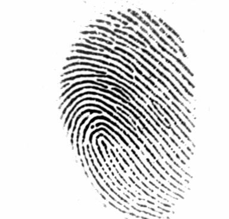
1. Original2. Normalizada
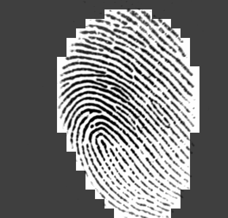
3. Segmentación
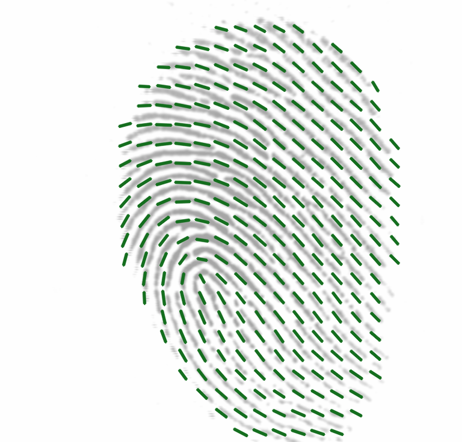
4. Orientación5. Gabor
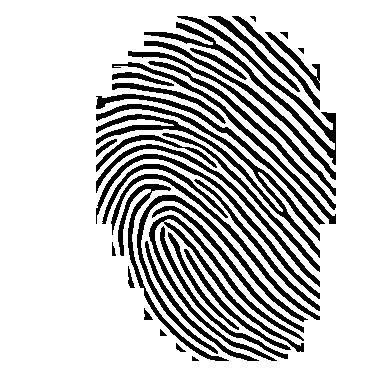
6. Binaria
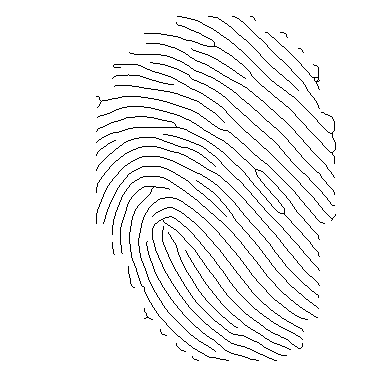
7. Esqueleto
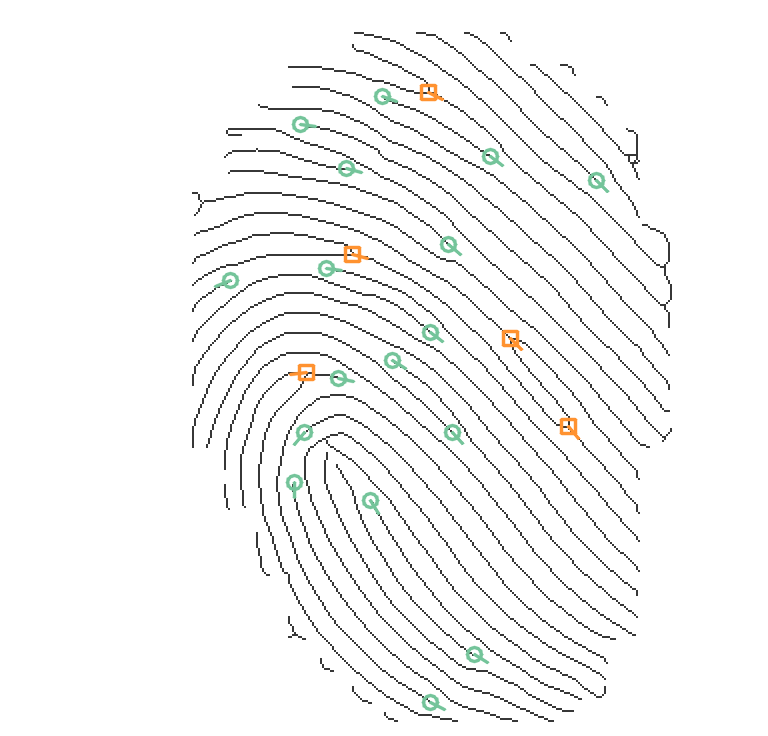
8. Minucias
RealFigura 6.1. Las etapas de pc/pia/huella/ sobre la huella pública FVC2002 DB1_B 101_1 (perfil fvc2002), generadas con docs/manual/generar_figuras.py. En la figura 8, círculos verdes = terminaciones, cuadros naranjas = bifurcaciones; la rayita indica la dirección. Resultado: 22 minucias (17 terminaciones y 5 bifurcaciones).
Fase 2a. Normalización
Con el perfil del sensor (as608) primero se aplica CLAHE (ecualización adaptativa de histograma con límite de contraste): divide la imagen en una rejilla de 8 × 8 regiones, estira el contraste de cada una por separado y limita cuánto lo estira para no amplificar ruido. Hace falta porque la imagen del AS608 usa en la práctica unos 8 de sus 16 niveles. Después se resta la media y se divide entre la desviación estándar, para que todas las huellas queden en la misma escala sin importar la presión del dedo.
Fase 2b. Segmentación
La imagen se parte en bloques de 16 × 16 píxeles. Un bloque con huella tiene crestas y valles, o sea mucha variación de brillo; el fondo es parejo. Se marca como huella el bloque cuya varianza supera un umbral (0.004 en el perfil as608, con la imagen en escala 0–1). Un filtro de mayoría 3 × 3 aplicado dos veces quita bloques sueltos. Para las minucias se usan solo los bloques "interiores" (los que tienen huella arriba, abajo y a los lados), porque en el borde aparecen terminaciones falsas donde la huella simplemente se acaba.
Fase 2c. Campo de orientación
En cada zona las crestas corren en una dirección. Para medirla se usan los gradientes de Sobel Gx y Gy (cuánto cambia el brillo en horizontal y en vertical). El gradiente apunta a través de las crestas; la cresta va a 90° de él. En cada bloque (con una ventana de 16 + 8 píxeles) se calcula:
Una cresta a 0° y una a 180° son la misma cresta (una orientación no tiene sentido de "ida" o "vuelta"). Si se promediaran ángulos directamente, 179° y 1° darían 90°, que es justo la dirección perpendicular. Al trabajar con 2θ, 179° y 1° se vuelven 358° y 2°, que sí están juntos. Por eso las fórmulas usan Gx² − Gy² y 2GxGy (son el coseno y el seno del ángulo doble) y al final se divide entre 2. El campo se suaviza con un núcleo [1 2 1] sobre 2θ, y la longitud del vector promedio es la coherencia (0 = zona confusa, 1 = crestas muy ordenadas).
Fase 2d. Realce con filtros de Gabor
Un filtro de Gabor es una onda coseno recortada por una campana gaussiana: responde fuerte a franjas paralelas de cierta separación y cierta orientación, y casi nada a lo demás. Es ideal para huellas porque las crestas son eso, franjas casi paralelas (Hong, Wan y Jain, 1998).
g(x, y) = exp(−(x² + y²) / 2σ²) · cos(2π f (x cos φ + y sin φ))
En el proyecto: σ = 4 px (ancho de la campana), f = 1/8.9 (las crestas se repiten cada 8.9 px), núcleo de 15 × 15 y un banco de 24 orientaciones (cada 7.5°). A cada filtro se le resta su media para que una zona pareja dé cero. Cada píxel toma la respuesta del filtro cuya orientación coincide con la de su campo: así se rellenan cortes y se borran manchas que no siguen el flujo de las crestas.
RealFigura 6.2. Cuatro de los 24 filtros de Gabor del proyecto (0°, 45°, 90° y 135°), tal como los genera _kernels_gabor.
Fase 2e. Binarización y adelgazamiento
Binarizar es pasar de grises a solo dos valores: con el filtro de Gabor centrado en cero, las crestas dan respuesta negativa, así que cresta = píxel dentro de la máscara con respuesta < 0. Adelgazar (esqueletizar) es quitar píxeles del borde de cada cresta, sin romperla, hasta dejarla de 1 píxel de ancho. Se usa skeletonize de scikit-image (en 2D usa el método de Zhang). Sin este paso no se pueden contar vecinos para encontrar minucias.
Fase 3. Minucias por número de cruce
Una minucia es un punto característico de la huella. Las dos que usa el proyecto: terminación (una cresta se acaba) y bifurcación (una cresta se divide en dos). Para cada píxel del esqueleto se recorren sus 8 vecinos en círculo y se cuenta cuántas veces se pasa de 0 a 1:
CN = ½ · Σk=1…8 | Pk − Pk+1 | (con P9 = P1)
Diagrama explicativoFigura 6.3. Número de cruce sobre el esqueleto: rojo = píxel analizado, azul = vecinos que son cresta.
Cada minucia guarda x, y, dirección t (la del campo de orientación más 90°, en [0, π)) y su tipo. Se descartan las que están a menos de 12 px del borde, fuera de los bloques interiores, o a menos de 6 px de otra (perfil as608): esos pares suelen ser ruido (espolones, puentes y cortes del esqueleto). Al registrar, una captura con menos de 10 minucias o calidad menor a 0.05 se rechaza y se repite.
Fase 4. Matching basado en grafos
Comparar dos huellas es difícil porque el dedo nunca se pone igual: cambia la posición, el giro y la parte del dedo que toca el sensor. La comparación de huella/matching.py tiene dos pasos:
Estructuras locales (el grafo). Cada minucia se une a sus 4 vecinas más cercanas. De cada unión se guarda la distancia, el ángulo hacia la vecina medido desde la dirección propia, y la diferencia de direcciones. Estas medidas no cambian si toda la huella se mueve o gira: son invariantes a traslación y rotación. Así, una minucia de la huella A y una de la B "se parecen" si sus vecindarios se parecen. El costo de cada par (solo entre minucias del mismo tipo) es: Σ|Δd|/8 + Σ|Δángulo|/0.35 + Σ|Δorientación|/0.35.
Consolidación global. Se toman los 40 pares de menor costo. Cada uno propone un giro y un desplazamiento (también se prueba el giro de 180°, porque la dirección de una minucia tiene esa ambigüedad). Con esa transformación se lleva toda la huella A sobre la B y se cuentan las minucias que quedan a menos de 10 px de una de B y con dirección parecida (menos de 0.3 rad ≈ 17°). Gana la propuesta con más pares, m.
puntaje = m² / (nA · nB)
Si todas las minucias de A tienen pareja en B y viceversa, el puntaje es 1. En la captura de la app del capítulo 7 hay 14 pares entre 30 y 20 minucias: 14² / (30 · 20) = 196 / 600 = 0.33, que es lo que muestra la pantalla. Con el código del proyecto, dos huellas del mismo dedo de FVC2002 (101_1 y 101_2) dan 0.480 y dos dedos distintos (101_1 y 102_1) dan 0.026.
Cuidado en la exposición
"Basado en grafos" se refiere a que cada minucia se describe por su vecindario (un grafo de vecinos más cercanos), y a que esas estructuras locales proponen la alineación. Las líneas que la app dibuja entre minucias de una misma huella son las aristas de ese grafo (vecinas mutuas entre las 3 más cercanas); las líneas entre las dos huellas son los pares que coincidieron. No es un algoritmo de isomorfismo de grafos completo: si el profesor lo pregunta, hay que explicarlo así.
En la verificación, la captura se compara contra las 5 plantillas que el usuario dejó al registrarse y se queda el mejor puntaje. Si el puntaje normalizado sale menor a 0.6, el sistema pide otra captura, hasta 3 intentos, sin volver a teclear el PIN.
Rostro
Hay que distinguir dos problemas: detectar un rostro (¿hay una cara y dónde está?) y reconocerlo (¿de quién es?). Viola-Jones resuelve lo primero; Eigenfaces, lo segundo.
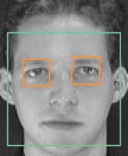
1. Viola-Jones: rostro (verde) y ojos (naranja)
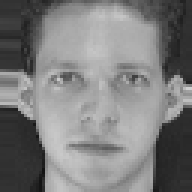
2. Alineada a 64 × 64 (ojos horizontales)
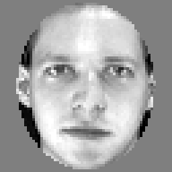
3. CLAHE y máscara elíptica
RealFigura 6.4. Etapas de pc/pia/rostro/ sobre la imagen pública ORL s1/1: la alineación giró la cara −2.4° para dejar los ojos horizontales.
Fase 1. Captura en vivo
Con la caja real, el backend lee el video de IP Webcam, detecta la cara en cada cuadro y manda a la app una vista previa con un óvalo guía e indicaciones: "acércate" si la cara ocupa menos del 28 % del ancho, "aléjate" si ocupa más del 62 %, "centra tu cara" si se sale ±12 % del centro, "mira de frente" si no ve los dos ojos. Tras una cuenta regresiva de 3 s, toma la foto cuando la cara lleva 1.5 s seguidos bien colocada. Si en 30 s no lo logra, niega con mensaje. Esto se agregó porque al principio se tomaba el primer cuadro y salían fotos movidas.
Fase 2a. Detección con Viola-Jones
El detector de Viola y Jones (2001) tiene cuatro ideas:
Características tipo Haar: rectángulos claros y oscuros contiguos. Por ejemplo, la zona de los ojos suele ser más oscura que la de las mejillas debajo; una característica mide esa diferencia de brillo.
Imagen integral: una tabla donde cada celda guarda la suma de todos los píxeles arriba y a la izquierda. Con ella, la suma de cualquier rectángulo se obtiene con 4 lecturas, así que medir miles de características es rápido.
AdaBoost: de cientos de miles de características posibles, un entrenamiento escoge las pocas que mejor separan caras de no-caras y las combina.
Cascada: se evalúan por etapas; las primeras son muy simples y descartan casi todas las ventanas que no son cara. Solo las ventanas prometedoras pasan a las etapas costosas. Por eso es rápido.
El proyecto usa las cascadas ya entrenadas de OpenCV: haarcascade_frontalface_default.xml (con scaleFactor = 1.1: la ventana crece 10 % en cada pasada; minNeighbors = 5: un rostro se acepta si lo detectan al menos 5 ventanas vecinas) y haarcascade_eye.xml dentro de la mitad superior del rostro, ampliada a unos 200 px de ancho porque la cascada falla con ojos de 10 px. Si hay varias caras, se queda con la más grande.
Cuidado en la exposición
Viola-Jones no reconoce a nadie: solo encuentra dónde hay una cara y dónde están los ojos. Y el proyecto no entrenó la cascada: usa la que trae OpenCV. Lo que sí implementa el proyecto es todo lo que sigue.
Fase 2b. Alineación geométrica
Eigenfaces compara píxel por píxel, así que la nariz de una foto debe caer donde cae la nariz de la otra. Con los centros de los dos ojos se calcula una transformación afín (giro + escala + traslación) que deja los ojos horizontales, a una distancia fija y en posiciones fijas de una imagen de 64 × 64: los ojos quedan a 40 % de la altura y en 33 % y 67 % del ancho. Si el par de ojos detectado es absurdo (distancia fuera de 25–65 % del ancho del rostro, como una ceja con un ojo) o no hay dos ojos, se usa un respaldo documentado: un recorte centrado del rectángulo del rostro.
Fase 2c. Normalización fotométrica
La luz cambia la cara más que la identidad. Se aplica CLAHE suave (límite 1.0, rejilla 2 × 2), se estira el contraste usando los percentiles 1 y 99 dentro de una máscara elíptica, y fuera de la elipse se pone gris neutro (0.5): así el fondo, el cabello y el cuello no influyen. En ORL, CLAHE suave dio EER de 10.0 % contra 13 % de la ecualización global.
Fase 3. Eigenfaces (PCA)
Una cara de 64 × 64 es un vector de d = 4096 números. Pero las caras no ocupan todo ese espacio: se parecen mucho entre sí. El análisis de componentes principales (PCA) encuentra las pocas direcciones en las que las caras más varían; esas direcciones, vistas como imágenes, son las eigenfaces (Turk y Pentland, 1991).
Se juntan n caras de entrenamiento y se calcula la cara media μ.
Se resta la media a cada cara: matriz A de n × d.
Truco de la matriz pequeña: la covarianza Aᵀ·A mide 4096 × 4096 (casi 17 millones de valores). En su lugar se calculan los eigenvectores v de A·Aᵀ, que mide solo n × n (con n = 210 caras, 44 100 valores). Si A·Aᵀ v = λv, entonces Aᵀv es eigenvector de Aᵀ·A con el mismo λ. Se normaliza cada Aᵀv: esas son las eigenfaces.
Se ordenan por varianza y se toman las k primeras que juntas explican el 95 % de la varianza.
pesos: w = U (x − μ) reconstrucción: x̂ = μ + Σi=1…k wi ui
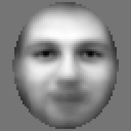
Cara media μ
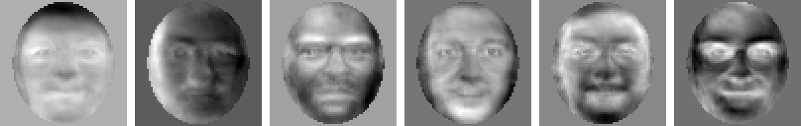
Primeras 6 eigenfaces
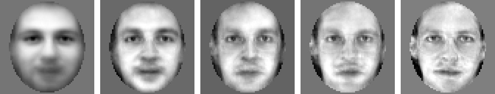
RealFigura 6.5. Modelo de ejemplo entrenado con el código del proyecto sobre 200 caras públicas de ORL (k = 96, 95.1 % de varianza). Abajo, la reconstrucción de la cara de la Figura 6.4 con 1, 5, 10, 20 y 96 componentes: con los pesos basta para recuperarla.
En la caja real, el modelo del dominio camara se reentrena con cada alta de usuario con 210 caras (las 90 de los seis usuarios registrados y 120 de fondo de ORL) y queda con k = 96 componentes. Después se vuelven a proyectar todos los usuarios con el modelo nuevo.
Fase 4. Distancia euclidiana
Cada cara queda reducida a su vector de pesos w (96 números). Para verificar, se calcula la distancia euclidiana entre los pesos de la captura y cada vector guardado del usuario, y se toma la mínima:
d = minj ‖ w − wj ‖ = minj √( Σi (wi − wj,i)² )
Se acepta si d < umbral (10.24 en la caja). A menor distancia, más parecido. En el modelo de ejemplo de ORL, dos fotos de la misma persona dieron d = 10.53 y dos de personas distintas d = 15.22 (con otro modelo; los números no se comparan con el umbral de la caja).
FAR, FRR, EER y cómo se eligieron los umbrales
Término
Qué es
Ejemplo
Genuino
Comparación de una persona contra su propio registro.
Sandra contra la plantilla de Sandra.
Impostor
Comparación de una persona contra el registro de otra.
Sandra contra la plantilla de Nestor.
FAR (falsa aceptación)
Fracción de comparaciones impostoras que el sistema acepta. Es un falso positivo: el error de seguridad.
FAR 7.7 % en rostro: ~8 de cada 100 caras ajenas pasan solo el factor rostro.
FRR (falso rechazo)
Fracción de comparaciones genuinas que el sistema rechaza. Es un falso negativo: el error de comodidad.
FRR 33 % en huella: 1 de cada 3 capturas genuinas sale bajo (por eso hay reintentos).
EER (tasa de error igual)
El punto donde FAR = FRR al mover el umbral. Resume la calidad de un reconocedor con un número: menor es mejor.
Rostro: 8.0 %. Huella: 16.7 %.
Al subir la exigencia del umbral baja la FAR y sube la FRR, y viceversa. pc/pia/calibracion.py prueba como umbral cada punto medio entre puntajes observados y escoge el de menor |FAR − FRR| (criterio EER); con --criterio far0 escoge el que da FAR = 0 con la menor FRR.
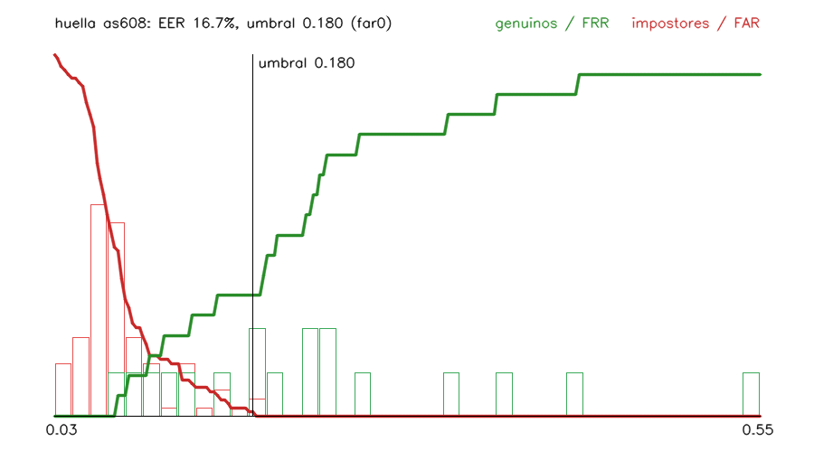
Huella (banco del AS608)
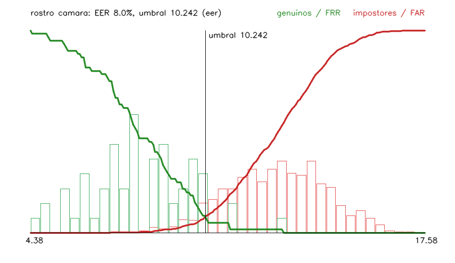
Rostro (salón, 26 nov)
RealFigura 6.6. Calibraciones activas generadas por calibrar.py: barras verdes = genuinos, rojas = impostores; curvas FRR (verde) y FAR (rojo); la línea vertical es el umbral elegido.
Factor
Criterio
Umbral
FAR
FRR
EER
Datos
Huella (AS608)
FAR = 0
0.180
0 %
33 %
16.7 %
6 dedos de una persona × 8 capturas: 18 genuinas, 90 impostoras
Rostro (cámara)
EER
10.24
7.7 %
8.3 %
8.0 %
Segunda tanda de 6 usuarios: 60 genuinas, 1260 impostoras (incluye 160 caras ORL)
Verificado en el proyecto: por qué el rostro usa EER y no FAR = 0
Con FAR = 0 el umbral del rostro quedaba en 9.25 y rechazaba al 45 % de los genuinos, porque las distancias de genuinos e impostores se enciman entre 8.2 y 10.9. Con EER el rostro deja pasar a un 7.7 % de impostores, pero ese impostor todavía tiene que pasar la huella (calibrada con FAR = 0) y la fusión. El perfil as608 de la huella se ajustó con una rejilla de 144 combinaciones de parámetros: bajó el EER de 34 % a 16.7 %.
Fusión y decisión
Un puntaje de huella (más es mejor, alrededor de 0.2) y una distancia de rostro (menos es mejor, alrededor de 10) no se pueden sumar tal cual. fusion.py los lleva a una escala común de 0 a 1 donde cada factor vale exactamente 0.50 en su umbral:
sh = clamp( puntaje / (2 · umbralh), 0, 1 ) sr = clamp( 1 − d / (2 · umbralr), 0, 1 )
Regla de decisión: se concede el acceso con el nivel del usuario si el PIN es correcto y sh ≥ 0.50 y sr ≥ 0.50 y 0.5·sh + 0.5·sr ≥ 0.60. Exigir que cada factor pase su propio mínimo evita que una huella excelente "rescate" una cara ajena (la regla anterior de la maqueta lo permitía).
Ejemplos reales del 26 de noviembre
Usuaria 14, legítima: sh = 1.000; rostro d = 2.75 → sr = 1 − 2.75 / (2 · 10.24) = 1 − 0.134 = 0.866 (la bitácora registra 0.865 con la distancia sin redondear). Fusión = 0.5 · 1.000 + 0.5 · 0.865 = 0.932 ≥ 0.60: concedido, nivel 1.
Impostora con el ID y PIN del usuario 21: sr = 0.541 (pasa, ≥ 0.50), pero sh = 0.356 (no pasa) y la fusión da 0.5 · 0.356 + 0.5 · 0.541 = 0.448: negado, motivo "la huella no pasa su umbral".
Usuario 21 con caras registradas en casa (calibración anterior, umbral de rostro 8.51): huella 0.929, rostro d = 8.60 → sr = 1 − 8.60 / 17.02 = 0.495 < 0.50: negado por rostro aunque la fusión (0.712) superaba 0.60. Al registrar las caras en el salón, el mismo usuario entró con sr = 0.594.
Limitaciones y vulnerabilidades
Riesgo
Qué pasa
Qué hace (o haría) el sistema
Luz distinta al registro
Eigenfaces mide brillo; una sombra cambia más la imagen que la identidad.
CLAHE, máscara, y registrar en el mismo lugar de la demo.
Pose y distancia
Una cara de lado o lejana no se alinea bien.
Óvalo guía, dos ojos obligatorios, ancho de cara entre 28 % y 62 %.
Calidad de cámara y red
Compresión JPEG, enfoque, cortes de WiFi.
640 × 480 fijo, URL de respaldo por hotspot, mensajes de error.
Dedo seco, húmedo o mal puesto
Crestas cortadas o manchadas, pocas minucias.
CLAHE, Gabor, hasta 3 capturas por verificación.
Suplantación (spoofing)
Una foto o un video de la cara, o un molde de huella.
No hay prueba de vida. Mejora: parpadeo, movimiento, sensor capacitivo.
PIN en el cable
La línea PIN:id:pin viaja sin cifrar por el USB.
En la base solo hay hash PBKDF2-SHA256 con sal y 200 000 iteraciones; en la app se enmascara.
Robo de la base
Las plantillas biométricas no se pueden "cambiar" como una contraseña.
datos/ nunca va a git; mejora: cifrar la base.
Fuerza física
El cerrojo es un brazo de servo de plástico.
Es un prototipo didáctico, no una caja fuerte.
Capítulo 7
7. Desarrollo del software y explicación del código
Hay tres programas: el firmware del ESP32 (C++), el backend (Python) y la app (JavaScript). Este capítulo recorre los bloques que deciden el comportamiento real. Todos los fragmentos se copian automáticamente del repositorio: la ruta y los números de línea permiten abrir el archivo y encontrarlos.
Lenguajes, entorno y organización
Programa
Lenguaje y entorno
Organización
Firmware
C++ con el framework Arduino para ESP32, compilado con PlatformIO en VS Code.
Un módulo por periférico (huella, teclado, pantalla, actuadores, protocolo) con su .h (qué ofrece) y su .cpp (cómo lo hace). main.cpp los coordina. platformio.ini define varios "entornos": el principal esp32dev y uno de prueba por módulo.
Backend
Python 3.14 en un entorno virtual .venv.
Paquete pia: algoritmos (huella/, rostro/, fusion, calibracion), datos (almacen, registro), hardware (camara, dispositivos/) y servicio (orquestador, servidor). Scripts de consola en pc/scripts/, pruebas en pc/tests/.
App
HTML, CSS y JavaScript sin frameworks.
principal.js atiende los eventos del WebSocket; dibujo.js pinta lienzos (huella, cámara, OLED); movimiento.js anima los botones.
Concepto clave: el patrón "dispositivo"
El orquestador no sabe si habla con la caja real, con un ESP32 falso por red o con el modo Simular: todos cumplen la misma interfaz Dispositivo (leer_pin(), capturar_huella(), mostrar(), actuar()). Gracias a eso, las 38 pruebas automáticas y las regresiones de la app recorren el mismo código que la demo, sin hardware.
Firmware: la máquina de estados
Un microcontrolador repite loop() miles de veces por segundo. Si el programa se detuviera con delay() esperando un dedo, dejaría de leer el teclado y el puerto serie. Por eso el firmware es una máquina de estados: en cada vuelta revisa en qué estado está, hace un poco de trabajo y sigue.
Los 7 estados posibles y las variables globales: tiempos (tUltimoPing, tFase, tGenImg), el ID y el PIN que se están tecleando, y si ya se pasó al PIN (enPin).
Por qué static
Hace que esas variables solo existan dentro de este archivo: ningún otro módulo las puede cambiar por error.
Diagrama explicativoFigura 7.1. Estados del firmware y los mensajes que los cambian. La tecla D cancela y vuelve a REPOSO; en RESULTADO, # manda OTRA para pedir el cierre.
Siempre reporta la tecla a la PC (TECLA:k). D cancela. Usa una referencia (String &campo) que apunta al ID o al PIN según la fase, así la misma lógica sirve para los dos. * borra el último dígito; los dígitos se agregan hasta 2 (ID) o 4 (PIN); # confirma solo si el campo está completo.
Produce
Al confirmar el PIN, envía PIN:id:pin, muestra "Verificando PIN..." y pasa a ESPERA_PC. En la OLED el PIN se ve como asteriscos.
Si fallara
Sin la condición pin.length() == 4, un # prematuro mandaría un PIN incompleto; la PC lo rechazaría como PIN incorrecto.
El ciclo principal
firmware/src/main.cpplíneas 184–236
184void loop() {
185 String l;
186 while (protocoloLinea(l)) comandoPc(l);
187 // `ahora` se toma DESPUÉS de leer los comandos: si se tomara antes, un PING recién llegado deja
188 // tUltimoPing > ahora, la resta sin signo da la vuelta y el ESP32 caía a SIN_PC cada segundo
189 // (borrando el ID y el PIN a medio teclear). Encontrado en P5 con la placa real.
190 uint32_t ahora = millis();
191192 // Vida: sin PING en 5 s, estado seguro (nunca durante una imagen: esa fase bloquea)
193 if (estado != SIN_PC && (int32_t)(ahora - tUltimoPing) > (int32_t)MS_SIN_PING) aSinPc();
194195 actuadoresTick();
196 char k = tecladoLeer();
197198 switch (estado) {
199 case SIN_PC:
200 break;
201 case REPOSO:
202 if (k) tecla(k);
203 break;
204 case TECLEANDO:
205 if (k) tecla(k);
206 if (millis() - tFase > MS_FASE_PIN) {
207 protocoloEnviar("CANCELA");
208 aReposo("Tiempo agotado", "Teclea tu ID");
209 }
210 break;
211 case ESPERA_PC:
212 if (k == 'D') tecla(k);
213 if (millis() - tFase > MS_FASE_PC) aReposo();
214 break;
215 case HUELLA:
216 if (k == 'D') {
217 tecla(k);
218 break;
219 }
220 if (ahora - tGenImg >= 100) {
221 tGenImg = ahora;
222 int cc = huellaGenImg();
223 if (cc == 0x00) {
224 protocoloEnviar("HUELLA:DEDO");
225 pantallaMostrar("Leyendo huella", "no muevas el dedo");
226 huellaEnviarImagen(barraHuella);
227 tUltimoPing = millis(); // la transferencia bloquea unos 7 s: no cuenta como silencio
228 pantallaMostrar("Huella recibida", "Procesando...");
229 cambiar(ESPERA_PC);
230 } else if (millis() - tFase > MS_ESPERA_DEDO) {
231 protocoloEnviar("HUELLA:ERR:TIEMPO");
232 pantallaMostrar("Sin dedo", "intenta de nuevo");
233 cambiar(ESPERA_PC);
234 }
235 }
236 break;
Primero, los comandos
while (protocoloLinea(l)) comandoPc(l); atiende todo lo que mandó la PC antes de hacer otra cosa.
Un error real corregido (líneas 187–190)
ahora se toma después de leer los comandos. Antes se tomaba al principio: si en esa vuelta llegaba un PING, tUltimoPing quedaba mayor que ahora, la resta sin signo daba un número enorme y el ESP32 creía que llevaba mucho sin PING: caía a SIN_PC cada segundo y borraba el PIN a medio teclear. Se encontró probando con la placa real.
Vida (línea 193)
Si pasan más de 5 s sin PING, estado seguro. El cast a int32_t hace que la resta funcione bien aunque millis() dé la vuelta (cada 49.7 días).
Huella (líneas 215–236)
Pide GenImg cada 100 ms sin bloquear. Con dedo (código 0x00) manda la imagen; esa transferencia sí bloquea unos 7 s, por eso al terminar se renueva tUltimoPing, para que el tiempo de transferencia no cuente como silencio de la PC. Sin dedo en 15 s, HUELLA:ERR:TIEMPO.
Driver del sensor: paquetes y reenvío de la imagen
Arma un paquete del protocolo del AS608: cabecera EF 01, dirección de 4 bytes (FF FF FF FF), tipo de paquete (pid), longitud (contenido + 2), el contenido y una suma de 16 bits de tipo + longitud + contenido. El sensor descarta cualquier paquete cuya suma no cuadre.
firmware/src/huella.cpplíneas 106–157
106bool huellaEnviarImagen(void (*progreso)(float)) {
107 uint8_t up = 0x0A;
108 int cc = comando(&up, 1);
109 if (cc != 0x00) {
110 protocoloEnviarf("HUELLA:ERR:0A:%02X", cc < 0 ? 0xFF : cc);
111 return false;
112 }
113 protocoloEnviarf("IMG:%d", IMG_BYTES);
114 Serial.flush();
115 uint32_t crc = 0xFFFFFFFF;
116 size_t total = 0;
117 uint8_t buf[300];
118 bool fin = false;
119 unsigned paquetes = 0, malos = 0;
120 while (!fin && total < (size_t)IMG_BYTES) {
121 uint8_t pid;
122 uint16_t n;
123 int r = leerPaquete(pid, buf, sizeof buf, n, 2000);
124 if (r == -1 || r == -3) break; // corte: se rellena abajo
125 if (r == -2 || (pid != PID_DATOS && pid != PID_FIN_DATOS)) {
126 malos++;
127 continue;
128 }
129 size_t cabe = min((size_t)n, (size_t)IMG_BYTES - total);
130 Serial.write(buf, cabe); // se reenvía conforme llega
131 crc = crcActualizar(crc, buf, cabe);
132 total += cabe;
133 fin = (pid == PID_FIN_DATOS);
134 paquetes++;
135 // La OLED tarda en redibujarse por I2C y el sensor no espera: si se actualiza con cada
136 // paquete se llena el búfer de UART2 y se pierden bytes (CRC "incorrecto" en P5).
137 // Cada 32 paquetes (~0.8 s) el búfer de 4 KB aguanta de sobra.
138 if (progreso && (paquetes % 32 == 0)) progreso((float)total / IMG_BYTES);
139 }
140 bool completa = total == (size_t)IMG_BYTES;
141 size_t total_real = total;
142 if (!completa) { // mantiene el marco: rellena y obliga a la PC a descartar
143 memset(buf, 0, sizeof buf);
144 while (total < (size_t)IMG_BYTES) {
145 size_t k = min(sizeof buf, (size_t)IMG_BYTES - total);
146 Serial.write(buf, k);
147 crc = crcActualizar(crc, buf, k);
148 total += k;
149 }
150 }
151 Serial.flush();
152 uint32_t final_ = ~crc;
153 protocoloEnviarf("IMG:FIN:%08lx", (unsigned long)(completa ? final_ : ~final_));
154 if (!completa) // después de IMG:FIN, para no romper el marco
155 protocoloEnviarf("DIAG:imagen incompleta: %u de %d bytes, %u paquetes malos", (unsigned)(total_real), IMG_BYTES, malos);
156 return completa;
157}
Recibe
Una función progreso para dibujar la barra en la OLED.
Procesa
Manda UpImage (0x0A), anuncia IMG:36864 a la PC y, paquete por paquete, reenvía los bytes en cuanto llegan (Serial.write) mientras calcula el CRC-32. El paquete de tipo 0x08 marca el final.
Un error real corregido (líneas 135–138)
Redibujar la OLED en cada paquete tardaba más de lo que el sensor espera; el búfer de 4 KB de la UART2 se llenaba, se perdían bytes y el CRC salía mal. Ahora la barra se actualiza cada 32 paquetes.
Si la imagen llega incompleta
Rellena con ceros hasta 36 864 bytes y manda el CRC invertido. Así la PC no pierde la sincronía (sabe exactamente cuántos bytes leer) y aun así descarta la imagen porque el CRC no coincide.
Nunca se mueven dos servos a la vez. actuadoresAcceso(nivel) no mueve nada: encola los movimientos (servo 1, y servo 2 si el nivel es 2). actuadoresTick(), llamado en cada vuelta de loop(), ejecuta el siguiente paso cuando ya pasaron msEntre (300 ms) desde el anterior.
Por qué
Dos servos arrancando juntos suman sus picos de corriente y pueden reiniciar el ESP32 (brownout). Con la cola, además, el programa sigue atendiendo el teclado y la PC mientras los servos se mueven.
Cierre automático
Existe (msAbierto), pero la PC lo desactiva al conectar (CONFIG:ms_abierto:0): en la demo los compartimentos quedan abiertos hasta "Intentar de nuevo" o #.
Backend: algoritmos de huella
pc/pia/huella/preproceso.pylíneas 75–114
75 # Segmentación por varianza de bloques
76 bloques = f.reshape(bh, B, bw, B)
77 bm = (bloques.var(axis=(1, 3)) > p.umbral_varianza).astype(np.uint8)
78 for _ in range(p.pasadas_mayoria):
79 bm = _mayoria(bm)
80 interior = np.zeros_like(bm)
81 interior[1:-1, 1:-1] = (
82 bm[1:-1, 1:-1] & bm[1:-1, :-2] & bm[1:-1, 2:] & bm[:-2, 1:-1] & bm[2:, 1:-1]
83 )
84 mascara = np.kron(bm, np.ones((B, B), np.uint8))
8586 # Gradientes de Sobel (sin borde, como la maqueta)
87 gx = cv2.Sobel(norm, cv2.CV_32F, 1, 0, ksize=3)
88 gy = cv2.Sobel(norm, cv2.CV_32F, 0, 1, ksize=3)
89 for g in (gx, gy):
90 g[0, :] = g[-1, :] = g[:, 0] = g[:, -1] = 0
9192 # Campo de orientación por bloque, ventana de B + 8 px, con imágenes integrales
93 def integral(a: np.ndarray) -> np.ndarray:
94 return cv2.integral(a.astype(np.float64))
9596 Ia, Ib, Ie = integral(gx * gx - gy * gy), integral(2 * gx * gy), integral(gx * gx + gy * gy)
97 vx = np.zeros((bh, bw), np.float32)
98 vy = np.zeros((bh, bw), np.float32)
99 for by in range(bh):
100 y0, y1 = max(1, by * B - 4), min(H - 1, by * B + B + 4)
101 for bx in range(bw):
102 x0, x1 = max(1, bx * B - 4), min(W - 1, bx * B + B + 4)
103 s = lambda I: I[y1, x1] - I[y0, x1] - I[y1, x0] + I[y0, x0] # noqa: E731
104 e = s(Ie) or 1.0
105 vx[by, bx] = s(Ia) / e
106 vy[by, bx] = s(Ib) / e
107108 # Suavizado [1 2 1] sobre 2θ, normalizado por los pesos dentro de la rejilla
109 k = np.outer([1, 2, 1], [1, 2, 1]).astype(np.float32)
110 peso = cv2.filter2D(np.ones_like(vx), -1, k, borderType=cv2.BORDER_CONSTANT)
111 sx = cv2.filter2D(vx, -1, k, borderType=cv2.BORDER_CONSTANT) / peso
112 sy = cv2.filter2D(vy, -1, k, borderType=cv2.BORDER_CONSTANT) / peso
113 coherencia = np.hypot(sx, sy).astype(np.float32)
114 orient_bloques = (0.5 * np.arctan2(sy, sx)).astype(np.float32)
Segmentación (75–84)
f.reshape(bh, B, bw, B) reacomoda la imagen en bloques de B × B sin copiarla; .var(axis=(1, 3)) da la varianza de cada bloque de un golpe. Dos pasadas de mayoría limpian la máscara; interior es la máscara "erosionada" (bloque con sus 4 vecinos también en huella). np.kron expande la máscara de bloques a píxeles.
Gradientes (86–90)
cv2.Sobel con ksize=3 en x y en y; se ponen en cero los bordes para no inventar gradientes fuera de la imagen.
Orientación (92–114)
Las imágenes integrales (cv2.integral) permiten sumar Gx² − Gy², 2GxGy y Gx² + Gy² en la ventana de cada bloque con 4 lecturas (la función s). El resultado son Vx y Vy del capítulo 6, que luego se suavizan con el núcleo [1 2 1] ⊗ [1 2 1]; la coherencia es la longitud de ese vector y el ángulo es la mitad de su atan2.
pc/pia/huella/preproceso.pylíneas 135–151
135 # Banco de Gabor: se filtra con cada orientación y cada píxel toma la suya
136 ks = _kernels_gabor(p)
137 nb = len(ks)
138 idx = np.round(np.mod(orientacion, np.pi) / np.pi * nb).astype(int) % nb
139 gabor = np.zeros((H, W), np.float32)
140 for b, kb in enumerate(ks):
141 sel = idx == b
142 if sel.any():
143 gabor[sel] = cv2.filter2D(norm, cv2.CV_32F, kb, borderType=cv2.BORDER_CONSTANT)[sel]
144 r = p.gabor_radio
145 borde = np.zeros((H, W), bool)
146 borde[r : H - r, r : W - r] = True
147 gabor[~(borde & (mascara > 0))] = 0
148149 binaria = ((mascara > 0) & (gabor < 0)).astype(np.uint8)
150 # Aparte de la maqueta: skimage en lugar de su Zhang-Suen propio
151 esqueleto = skeletonize(binaria.astype(bool)).astype(np.uint8)
Gabor
Cada píxel tiene su orientación; se redondea al filtro más cercano de los 24 (idx). Se filtra la imagen completa con cada filtro (cv2.filter2D) y cada píxel copia el resultado del suyo (gabor[sel] = …[sel]). Fuera de la máscara y en el borde (donde el filtro no cabe) se pone cero.
Binaria y esqueleto
Cresta = dentro de la máscara y respuesta negativa. skeletonize la adelgaza a 1 píxel.
Si se quitara Gabor
La binarización saldría con crestas cortadas y manchas, y el esqueleto tendría cientos de "minucias" falsas en cada corte.
pc/pia/huella/minucias.pylíneas 24–54
24def extraer(pre: Preproceso, p: Perfil) -> list[Minucia]:
25 sk = pre.esqueleto.astype(np.int8)
26 H, W = sk.shape
27 B = p.bloque
28 # Los 8 vecinos en orden circular: N, NE, E, SE, S, SO, O, NO
29 desp = [(-1, 0), (-1, 1), (0, 1), (1, 1), (1, 0), (1, -1), (0, -1), (-1, -1)]
30 pad = np.pad(sk, 1)
31 vec = [pad[1 + dy : 1 + dy + H, 1 + dx : 1 + dx + W] for dy, dx in desp]
32 cn = sum(np.abs(vec[k] - vec[(k + 1) % 8]) for k in range(8)) // 2
3334 m = p.margen_minucias
35 valido = np.zeros((H, W), bool)
36 valido[m : H - m, m : W - m] = True
37 interior = np.kron(pre.bloques_interiores, np.ones((B, B), np.uint8)).astype(bool)
38 interior = np.pad(interior, ((0, H - interior.shape[0]), (0, W - interior.shape[1])))
39 sel = (sk == 1) & valido & interior & ((cn == 1) | (cn == 3))
4041 ys, xs = np.nonzero(sel)
42 tipos = np.where(cn[ys, xs] == 1, "T", "B")
43 ts = np.mod(pre.orientacion[ys, xs] + np.pi / 2, np.pi)
4445 # Limpieza: minucias muy cercanas entre sí son ruido (espolones, puentes, cortes)
46 pts = np.stack([xs, ys], axis=1).astype(np.float32)
47 if len(pts):
48 d = np.hypot(*(pts[:, None, :] - pts[None, :, :]).transpose(2, 0, 1))
49 np.fill_diagonal(d, np.inf)
50 quedan = (d >= p.distancia_min_minucias).all(axis=1)
51 else:
52 quedan = np.zeros(0, bool)
53 return [Minucia(int(x), int(y), float(t), str(k))
54 for x, y, t, k, q in zip(xs, ys, ts, tipos, quedan) if q]
Número de cruce vectorizado
En lugar de recorrer píxel por píxel, crea 8 copias desplazadas del esqueleto (una por vecino, en orden circular N, NE, E, SE, S, SO, O, NO) y calcula CN para toda la imagen a la vez: ½ Σ |vecinok − vecinok+1|.
Filtro
Se conservan los píxeles de esqueleto con CN = 1 (T) o CN = 3 (B), lejos del borde y en bloques interiores. La dirección es la orientación + 90°.
Limpieza
Se calcula la matriz de distancias entre todas las minucias y se eliminan las que tienen otra a menos de distancia_min_minucias (6 px en as608).
Devuelve
Una lista de Minucia(x, y, t, tipo): la plantilla que se guarda en la base.
pc/pia/huella/matching.pylíneas 73–112
73def comparar(A: list[Minucia], B: list[Minucia]) -> ResultadoMatching:
74 if len(A) < K + 1 or len(B) < K + 1:
75 return ResultadoMatching(0.0)
76 xa, ya, ta, tipa = _arreglos(A)
77 xb, yb, tb, tipb = _arreglos(B)
78 va, da, aa, oa = _descriptores(xa, ya, ta)
79 vb, db, ab, ob = _descriptores(xb, yb, tb)
8081 # Costo local de cada par (i de A, j de B) del mismo tipo
82 costo = (
83 np.abs(da[:, None, :] - db[None, :, :]).sum(2) / 8
84 + _d_pi(aa[:, None, :], ab[None, :, :]).sum(2) / 0.35
85 + _d_pi(oa[:, None, :], ob[None, :, :]).sum(2) / 0.35
86 )
87 costo[tipa[:, None] != tipb[None, :]] = np.inf
88 plano = np.argsort(costo, axis=None, kind="stable")[:CANDIDATAS]
89 plano = plano[np.isfinite(costo.flat[plano])]
9091 mejor_m, mejores = 0, []
92 for c in plano:
93 i0, j0 = np.unravel_index(c, costo.shape)
94 for giro in (0.0, np.pi):
95 rot = tb[j0] - ta[i0] + giro
96 co, si = np.cos(rot), np.sin(rot)
97 X, Y = xa - xa[i0], ya - ya[i0]
98 px, py = co * X - si * Y + xb[j0], si * X + co * Y + yb[j0]
99 d = np.hypot(px[:, None] - xb[None, :], py[:, None] - yb[None, :])
100 d[_d_pi(ta[:, None] + rot, tb[None, :]) >= ANG_PAR] = np.inf
101 usado = np.zeros(len(B), bool)
102 pares = []
103 for i in range(len(A)): # codicioso en orden, como la maqueta
104 fila = np.where(usado, np.inf, d[i])
105 j = int(np.argmin(fila))
106 if fila[j] < DIST_PAR:
107 usado[j] = True
108 pares.append((i, j))
109 if len(pares) > mejor_m:
110 mejor_m, mejores = len(pares), pares
111112 return ResultadoMatching(mejor_m * mejor_m / (len(A) * len(B)), mejores, _aristas(va), _aristas(vb))
Costo local (82–89)
Una matriz de nA × nB con el costo de emparejar cada minucia de A con cada una de B según sus 4 vecinas; las de distinto tipo valen infinito. Se toman los 40 pares más baratos.
Consolidación (92–110)
Para cada candidata y cada giro (0 y π): rota y traslada todas las minucias de A, calcula la distancia a todas las de B, anula las de dirección incompatible y empareja de forma codiciosa (cada minucia de B se usa una sola vez) las que quedan a menos de 10 px.
Devuelve
ResultadoMatching con el puntaje m² / (nA·nB), los pares y las aristas para dibujar.
Backend: Eigenfaces, fusión y PIN
pc/pia/rostro/eigenfaces.pylíneas 60–89
60def entrenar(caras: np.ndarray, meta_varianza: float = 0.95, k_max: int | None = None) -> Modelo:
61 """caras: (n, lado, lado) o (n, d)."""
62 caras = np.asarray(caras, np.float64)
63 lado = caras.shape[1] if caras.ndim == 3 else int(np.sqrt(caras.shape[1]))
64 X = caras.reshape(len(caras), -1)
65 n = len(X)
66 if n < 2:
67 raise ValueError("Hacen falta al menos 2 caras para entrenar")
68 media = X.mean(axis=0)
69 A = X - media
70 L = A @ A.T / (n - 1) # n x n en lugar de d x d
71 vals, vecs = np.linalg.eigh(L) # ascendente
72 orden = np.argsort(vals)[::-1]
73 vals, vecs = vals[orden], vecs[:, orden]
74 utiles = vals > vals[0] * 1e-10 # el último es ~0 por el centrado
75 vals, vecs = vals[utiles], vecs[:, utiles]
76 U = (A.T @ vecs).T # (r, d): Aᵀv
77 U /= np.linalg.norm(U, axis=1, keepdims=True)
78 acumulada = np.cumsum(vals) / vals.sum()
79 k = int(np.searchsorted(acumulada, meta_varianza) + 1)
80 if k_max:
81 k = min(k, k_max)
82 k = min(k, len(vals))
83 return Modelo(media, U[:k], vals[:k], float(acumulada[k - 1]), lado)
848586def distancia_minima(pesos: np.ndarray, vectores: np.ndarray) -> float:
87 """Distancia euclidiana mínima entre un vector de pesos y los del usuario."""
88 vectores = np.atleast_2d(vectores)
89 return float(np.linalg.norm(vectores - pesos, axis=1).min())
Entrenar
L = A @ A.T / (n − 1) es la matriz pequeña n × n. np.linalg.eigh (para matrices simétricas) da eigenvalores y eigenvectores en orden ascendente; se invierten. Se descartan los eigenvalores ≈ 0 (el centrado siempre deja uno). U = (A.T @ vecs).T es el truco: convierte cada eigenvector pequeño en una eigenface de 4096 valores, que luego se normaliza. np.searchsorted encuentra el primer k cuya varianza acumulada llega al 95 %.
Distancia
distancia_minima resta los pesos de la captura a cada vector del usuario y toma la norma más pequeña.
Si no se usara el truco
Habría que descomponer una matriz de 4096 × 4096 en cada alta: mucho más lento y con mucha más memoria, para el mismo resultado.
pc/pia/fusion.pylíneas 38–52
38def decidir(nivel_usuario: int, s_huella: float, s_rostro: float, peso_huella: float = 0.5,
39 peso_rostro: float = 0.5, umbral_factor: float = 0.50, umbral_fusion: float = 0.60) -> Decision:
40 f = peso_huella * s_huella + peso_rostro * s_rostro
41 h_ok, r_ok = s_huella >= umbral_factor, s_rostro >= umbral_factor
42 if not h_ok and not r_ok:
43 motivo = "ni huella ni rostro pasan su umbral"
44 elif not h_ok:
45 motivo = "la huella no pasa su umbral"
46 elif not r_ok:
47 motivo = "el rostro no pasa su umbral"
48 elif f < umbral_fusion:
49 motivo = f"el puntaje fusionado no llega a {umbral_fusion:.2f}"
50 else:
51 return Decision(True, nivel_usuario, s_huella, s_rostro, f, "")
52 return Decision(False, 0, s_huella, s_rostro, f, motivo)
Recibe
El nivel del usuario y los dos puntajes normalizados (0–1).
Devuelve
Una Decision con concedido, nivel, los tres valores y el motivo del rechazo, que se guarda en la bitácora y se muestra en la app.
pc/pia/pin.pylíneas 16–27
16def hashear(pin: str, sal: bytes | None = None, iteraciones: int = ITERACIONES) -> tuple[bytes, bytes, int]:
17 if not (pin.isdigit() and len(pin) == 4):
18 raise ValueError("El PIN es de 4 dígitos")
19 sal = sal or os.urandom(16)
20 return hashlib.pbkdf2_hmac("sha256", pin.encode(), sal, iteraciones), sal, iteraciones
212223def verificar(pin: str, hash_: bytes, sal: bytes, iteraciones: int) -> bool:
24 if not pin.isdigit():
25 return False
26 calculado = hashlib.pbkdf2_hmac("sha256", pin.encode(), sal, iteraciones)
27 return hmac.compare_digest(calculado, hash_)
PBKDF2-HMAC-SHA256
Aplica SHA-256 200 000 veces con una sal aleatoria de 16 bytes por usuario. La sal hace que dos usuarios con el mismo PIN tengan hashes distintos; las iteraciones hacen lento probar PIN por PIN. hmac.compare_digest compara en tiempo constante, para no dar pistas por el tiempo de respuesta.
Límite honesto
Con solo 10 000 PIN posibles, quien robe la base podría probarlos todos en un rato. El hash evita guardarlo en claro; no lo vuelve fuerte. Así lo dice el propio código.
Es el final de _verificar_flujo: normaliza los dos puntajes con las calibraciones activas, llama a decidir con los pesos y umbrales de config.toml, emite el evento fusion para la app, guarda las imágenes del intento y cierra (manda ACCESO:n a la caja y escribe la bitácora).
Asincronía
async/await permite que mientras se espera al ESP32 o a la cámara el servidor siga atendiendo el WebSocket. Los cálculos pesados se mandan a otro hilo con asyncio.to_thread para no congelar la app.
pc/pia/dispositivos/esp32.pylíneas 187–230
187 def _leer_imagen(self, n: int, buf: bytes) -> bytes:
188 self.en_transferencia = True
189 self._poner("img_inicio", n)
190 datos = bytearray()
191 ultimo = time.monotonic()
192 bloque = ANCHO // 2 * 16 # 16 filas
193 enviado = 0
194 while len(datos) < n:
195 if buf:
196 tomar = min(len(buf), n - len(datos))
197 datos += buf[:tomar]
198 buf = buf[tomar:]
199 ultimo = time.monotonic()
200 else:
201 try:
202 buf = self.ser.read(max(1, self.ser.in_waiting))
203 except (serial.SerialException, OSError):
204 break
205 if not buf and time.monotonic() - ultimo > 3.0:
206 break
207 while len(datos) - enviado >= bloque or (len(datos) == n and enviado < n):
208 fin = min(enviado + bloque, len(datos))
209 self._poner("img_bloque", (enviado, bytes(datos[enviado:fin])))
210 enviado = fin
211 if len(datos) < n:
212 self._poner("img_corte", len(datos))
213 self.en_transferencia = False
214 return b""
215 # la línea IMG:FIN viene después de los datos
216 while b"\n" not in buf:
217 try:
218 r = self.ser.read(max(1, self.ser.in_waiting))
219 except (serial.SerialException, OSError):
220 break
221 if not r and time.monotonic() - ultimo > 3.0:
222 break
223 buf += r
224 fin_ln, _, buf = buf.partition(b"\n")
225 t = fin_ln.decode("ascii", "replace").strip()
226 crc_ok = t.startswith("IMG:FIN:") and int(t.split(":")[2], 16) == (zlib.crc32(bytes(datos)) & 0xFFFFFFFF)
227 self._poner("linea", t)
228 self._poner("img_fin", (bytes(datos), crc_ok))
229 self.en_transferencia = False
230 return buf
Modo línea y modo binario
Un hilo lee el puerto. Normalmente separa por \n; al ver IMG:<n> lee exactamente n bytes (en bloques de 16 filas que se mandan a la app para el efecto de "barrido") y vuelve a leer líneas. Verifica el CRC-32 con zlib.crc32.
Si se corta
Tras 3 s sin datos marca img_corte y la verificación reporta el error en lugar de quedarse esperando.
La app: solo dibuja
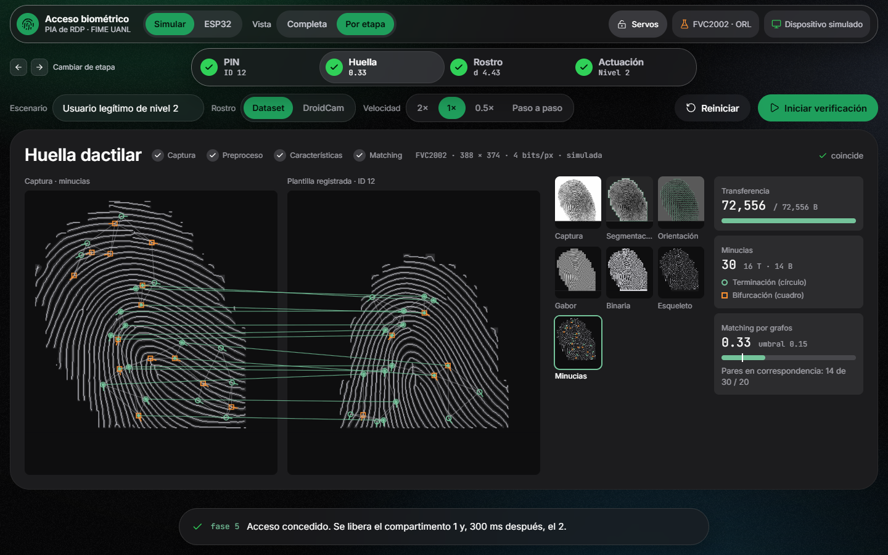
RealFigura 7.2. Etapa de huella en modo Simular (FVC2002): captura y plantilla con sus minucias, pares del matching, miniaturas de cada etapa y puntaje 0.33 contra umbral 0.15. Captura tomada por la regresión automática de Playwright.
app/js/principal.jslíneas 220–238
220H.huella_matching=async(m,id)=>{
221 const sk=m.plantilla.esqueleto, u=dec(sk), b=dec(m.plantilla.binaria);
222 T={w:sk.ancho,h:sk.alto,skel:Uint8Array.from(u,v=>v>0),bin:Uint8Array.from(b,v=>v>0),minu:m.plantilla.minucias.map(q=>({x:q.x,y:q.y,t:q.t,type:q.tipo}))};
223 construir(T,'skel'); drawStage($('#fpR').getContext('2d'),T,'min',1); $('#fpLblR').textContent=`Plantilla registrada · ID ${idActual}`;
224 /* el backend compara (plantilla, captura): se invierte para dibujar captura a la izquierda */
225 M={score:m.puntaje,pairs:m.pares.map(([a,b])=>[b,a]),edgesA:m.aristas_b,edgesB:m.aristas_a};
226 S.umbralH=m.umbral; $('#mThr').style.left=(m.umbral*100)+'%';
227 setPhase(4,'huella'); $('#fpLblL').textContent='Captura · minucias';
228 caption('fase 4','Matching por grafos: cada minucia se describe por sus 4 vecinas más cercanas (distancias y ángulos relativos).');
229 overlayState={F,T,M,p:0};
230 await anim(2200,e=>{overlayState.p=e;drawOverlay();const sc=M.score*clamp((e-.25)/.75,0,1);
231 $('#mScore').innerHTML=`${fmt(sc)} <small>umbral ${fmt(m.umbral)}</small>`;$('#mScoreBar').style.width=clamp(sc*100,0,100)+'%';
232 $('#mPairs').textContent=`Pares en correspondencia: ${Math.floor(clamp((e-.25)/.75,0,1)*M.pairs.length)} de ${F.minu.length} / ${T.minu.length}`},id);
233 const hOk=M.score>=m.umbral;
234 $('#mScoreBar').style.background=hOk?'var(--acento-claro)':'var(--no)';
235 $('#fpSt').innerHTML=est(hOk?'ok':'no',hOk?'coincide':'no coincide'); setPhase(5,'huella');
236 await beat('fase 4',`Puntaje de huella ${fmt3(M.score,m.umbral)} contra umbral ${fmt(m.umbral)}${m.eer!=null?` (EER ${(m.eer*100).toFixed(1)} %)`:''}: ${hOk?'coincide':'no coincide'}.${m.de>1?` Intento ${m.intento} de ${m.de}.`:''}`,1000,id);
237 listo('huella'); // la caja sigue (otro intento o la cámara) cuando la app ya mostró esta huella
238};
Qué muestra este bloque
Al llegar el evento huella_matching, la app reconstruye la plantilla y la captura con los datos que mandó Python (esqueleto, minucias, pares, puntaje y umbral) y anima la barra y el conteo de pares. No vuelve a calcular el matching: solo interpola lo que recibió para que se vea en movimiento.
Sincronía con la caja
listo('huella') le avisa al backend que ya terminó de mostrar la huella; la caja espera ese aviso (hasta 30 s) antes de pasar a la cámara, para que lo físico y la pantalla vayan juntos.
Manejo de errores
Situación
Respuesta del sistema
ID no registrado o PIN incorrecto
Se niega sin pedir huella ni rostro; etapas 2 y 3 marcadas "no se pidió".
Huella floja
Hasta 3 capturas; se queda la mejor.
CRC incorrecto o imagen cortada
Se descarta la imagen y se reporta; nunca se procesa una imagen dañada.
Sin cara en 30 s o cámara caída
Error con "qué revisar"; la cámara prueba primero la URL principal y luego la de respaldo.
Sin calibración o sin modelo para la fuente
Error explícito con el script que hay que correr.
Cable USB desconectado
"Se perdió la conexión con el ESP32"; el ESP32, sin PING, cierra los servos.
Tecla D
Cancelación limpia: se registra como intento cancelado.
Cada error lleva un mensaje y un campo que_revisar; la app los muestra en el pie de pantalla. Ningún error inventa un resultado: si falta un dato, se niega o se detiene.
Capítulo 8
8. Comunicación entre software y hardware
Cinco enlaces distintos mueven la información: UART con el sensor, I²C con la pantalla, PWM a los servos, un protocolo de texto propio por USB con la PC, y la red (HTTP para el video y WebSocket para la app).
Mapa de enlaces
Enlace
Medio y velocidad
Qué viaja
Definido en
ESP32 ↔ AS608
UART2, 57 600 bps 8N1
Paquetes binarios con cabecera y suma: comandos (VfyPwd, GenImg, UpImage) y la imagen.
firmware/src/huella.cpp
ESP32 → OLED
I²C, dirección 0x3C
El contenido de la pantalla (1 KB: 128 × 64 bits).
Biblioteca Adafruit SSD1306
ESP32 → servos
PWM 50 Hz
El ángulo, codificado en el ancho del pulso.
ESP32Servo
ESP32 → teclado
GPIO (barrido de matriz)
Qué fila y columna están unidas.
Keypad
ESP32 ↔ PC
USB (UART0), 921 600 bps
Líneas de texto ASCII de máximo 64 caracteres y, una vez por verificación, 36 864 bytes de imagen.
docs/PROTOCOLO.md
Celular → PC
WiFi, HTTP
Video MJPEG 640 × 480 en :8080/video.
pc/pia/camara.py
Backend ↔ app
WebSocket en /ws
Eventos JSON: etapas, imágenes de cada fase, minucias, puntajes, veredicto; y de vuelta, órdenes de la app.
Es un contrato escrito antes de programar (docs/PROTOCOLO.md): ni el firmware ni el backend se programan contra otra cosa. Reglas: texto terminado en \n, sin acentos, máximo 64 caracteres; la PC ignora lo que no reconoce; las líneas DIAG: son solo diagnóstico.
ESP32 → PC
HOLA:1.0:OK:OK
Saludo: versión, sensor, OLED
TECLA:5
Cada tecla
PIN:21:2468
ID y PIN completos
CANCELA
Tecla D o tiempo agotado
HUELLA:ESPERA / DEDO
Esperando dedo / dedo detectado
HUELLA:ERR:TIEMPO
Sin dedo en 15 s
IMG:36864 … IMG:FIN:<crc>
Imagen cruda y su CRC-32
OTRA / CERRADO
# con resultado / servos cerrados
PONG
Respuesta a PING
PC → ESP32
PING
Cada segundo (latido)
MSG:Mira a la|camara
Dos líneas para la OLED
PEDIR_HUELLA
Empieza la captura
ACCESO:0/1/2
Decisión
CERRAR
Cierra los servos uno a la vez
CONFIG:ms_abierto:0
Ajustes al conectar
SERVO:1:90
Control manual (módulo Servos)
RESET
Vuelve al inicio y saluda
Diagrama explicativoFigura 8.1. Secuencia de una verificación concedida (nivel 2). Mientras tanto, la PC manda PING cada segundo y el ESP32 contesta PONG (no dibujado), salvo durante la imagen.
El marco de la imagen y el CRC
Mezclar texto y binario en un mismo cable es delicado: un byte de imagen podría valer 10 (\n) y partir una "línea". Por eso IMG:36864 anuncia exactamente cuántos bytes binarios siguen; el lector de la PC cambia a modo binario, cuenta esos bytes y vuelve a modo línea. El CRC-32 (verificación de redundancia cíclica, el mismo de zlib) es una "huella digital" de 32 bits de los datos: si un solo bit cambió en el camino, el CRC calculado en la PC no coincide con el que mandó el ESP32 y la imagen se descarta. Va al final porque el ESP32 no lo conoce hasta reenviar el último byte.
El protocolo del sensor AS608
Diagrama explicativoFigura 8.2. Paquete del AS608. Verificado el 13 de noviembre: la imagen llega en 288 paquetes de datos de 128 bytes, el último con PID 0x08, sin errores de suma.
Video y WebSocket
HTTP con MJPEG. IP Webcam sirve una respuesta HTTP que nunca termina: una tras otra manda imágenes JPEG separadas por marcas. El backend la abre con cv2.VideoCapture o, si falla, con su propio lector que busca los marcadores de inicio y fin de JPEG (FF D8 … FF D9). Antes de cada verificación prueba si la URL principal contesta (1.5 s, solo un socket TCP, sin descargar video) y si no, usa la de respaldo.
WebSocket. HTTP normal es "pregunta y respuesta"; un WebSocket es un canal abierto en ambos sentidos. El backend lo usa para empujar a la app cada evento en cuanto ocurre (etapa, tecla, huella_filas, huella_etapa, huella_matching, rostro_vivo, rostro_pca, rostro_distancia, fusion, veredicto, servo…). La app manda órdenes (iniciar, buscar_puertos, conectar, servo, otra) y los avisos listo que sincronizan la caja con la animación.
Analogía
HTTP es como mandar cartas: cada respuesta necesita una pregunta. Un WebSocket es una llamada telefónica abierta: cualquiera de los dos habla cuando tiene algo. La analogía falla en que el WebSocket sí conserva el orden y no pierde mensajes mientras la conexión siga viva, y en que los mensajes son estructurados (JSON), no voz.
Capítulo 9
9. Funcionamiento completo, paso a paso
Desde que se conecta el cable hasta que los compartimentos se vuelven a cerrar. Con este capítulo cualquier integrante debería poder narrar la demo completa sin apoyo.
Diagrama explicativoFigura 9.1. Flujo de una verificación (pc/pia/orquestador.py). Un error de cámara o de sensor también termina en "negado" con su mensaje.
Antes de la primera verificación
#
Qué sucede
Componentes, señales y decisiones
1
Se conecta la caja por USB.
El ESP32 arranca: setup() pone los dos servos en 0° (uno, espera 300 ms, el otro), inicia el puerto USB a 921 600 bps, la OLED por I²C, el teclado y el sensor (manda VfyPwd y espera respuesta 0x00). Manda HOLA:1.0:OK:OK y entra en SIN_PC: OLED "Sin conexion con la PC".
2
Se arranca el backend (python -m pia; en la laptop, puerto 8001) y se abre la app.
FastAPI sirve la app y abre el WebSocket; el backend carga usuarios, escenarios y calibraciones y manda el evento estado.
3
ESP32 → Buscar ESP32 en la app.
El backend prueba cada puerto COM: lo abre, espera HOLA (o lo pide con RESET) y se conecta al primero que contesta con el firmware principal. Manda CONFIG y empieza el PING cada segundo. El ESP32, al recibir el primer PING, pasa a REPOSO: "Listo · Teclea tu ID". El botón se pone verde: "Conectado".
Una verificación
#
Qué sucede
Componentes, señales y decisiones
4
La persona teclea su ID y su PIN.
El ESP32 barre el teclado, manda TECLA:c por cada tecla (la app ilumina la tecla y llena las casillas) y, con el # final, PIN:id:pin. OLED: "Verificando PIN...".
5
El backend comprueba el PIN.
Busca el usuario en SQLite y calcula PBKDF2 con su sal (200 000 iteraciones). Decisión: si el ID no existe o el PIN no coincide, se niega ya (etapas 2 y 3 "no se pidió") y se salta al paso 12.
6
Captura de huella.
Backend → PEDIR_HUELLA. OLED: "Coloca el dedo en el sensor". El ESP32 manda GenImg cada 100 ms; con dedo, UpImage, y reenvía la imagen a la PC durante ~8 s (barra en la OLED; la app dibuja la huella bajando). La PC verifica el CRC.
7
Procesamiento de huella.
En un hilo aparte: CLAHE, normalización, segmentación, orientación, Gabor, binarización, esqueleto, minucias. Comparación contra las 5 plantillas; se queda el mejor puntaje. La app recibe y muestra cada etapa. Decisión: si sh < 0.6 y quedan intentos (máx. 3), OLED "Huella debil · Intento 2 de 3" y se repite el paso 6.
8
La caja espera a la app.
El backend no pasa a la cámara hasta que la app avisa listo (máx. 30 s): así lo que se ve y lo que pasa en la caja van juntos.
9
Rostro en vivo.
OLED: "Mira a la camara". El backend lee IP Webcam (URL principal o de respaldo), detecta la cara en cada cuadro y manda a la app la vista previa con el óvalo y la indicación. Tras 3 s de cuenta regresiva toma la foto cuando la cara lleva 1.5 s dentro de la guía con los dos ojos.
10
Procesamiento de rostro.
Viola-Jones (rostro y ojos), alineación a 64 × 64, CLAHE y máscara, proyección en Eigenfaces (k = 96), distancia mínima contra los vectores del usuario. La app muestra cada paso, la cara media, las eigenfaces, los pesos, la reconstrucción y la distancia contra la distribución de la calibración.
11
Fusión y decisión.
sh y sr en 0–1 (0.50 = umbral). Concedido si los dos ≥ 0.50 y 0.5 sh + 0.5 sr ≥ 0.60. Se guarda la fila en la bitácora (con imágenes del intento) y la app la agrega a la tabla.
12
Actuación.
Cuando la app termina de mostrar el veredicto, el backend manda ACCESO:n. Nivel 1: servo 1 a 90°. Nivel 2: servo 1, 300 ms después servo 2. Nivel 0: nada se abre (LED rojo cuando se conecte). OLED con el resultado. El ESP32 queda en RESULTADO.
13
La persona abre el compartimento.
El brazo del servo ya no está bajo el gancho: la tapa se levanta con la mano.
14
Cierre y siguiente persona.
Con # en la caja (manda OTRA) o "Intentar de nuevo" en la app, el backend manda CERRAR: servos a 0° uno a la vez; el botón dice "Cerrando…" hasta que la OLED vuelve a "Listo". El ESP32 responde CERRADO y vuelve a REPOSO.
Si algo sale mal a la mitad
Tecla D en cualquier momento: cancela, se registra como cancelado y la caja vuelve a "Listo".
30 s sin terminar de teclear: el ESP32 cancela solo ("Tiempo agotado").
La PC deja de mandar PING 5 s (backend cerrado, cable suelto): servos cerrados, "Sin conexion con la PC".
La cámara no contesta: "La cámara no responde en …" y qué revisar; la verificación termina negada.
Capítulo 10
10. Proceso de construcción y desarrollo
La cronología sale del historial de git del repositorio y de los documentos de estado; las fechas son de 2026.
Cronología
Fecha
Etapa
Qué se hizo
2 nov
Planeación
Avance ante el profesor: idea, alcance (PIN + huella + rostro, dos niveles) y plan de trabajo.
5–9 nov
Selección y diseño
Estado del arte; selección de componentes (ESP32, AS608, SG90, OLED, teclado, celular como cámara); asignación de pines evitando los de arranque; primera versión de la caja generada con CadQuery y pasada a SolidWorks. Documento de contexto con riesgos.
11–12 nov
Maqueta de la interfaz
Maqueta del modo Simular en el navegador (estilo de Apple, vista por etapas) con una prueba de regresión de cinco escenarios.
13 nov
Hoja de ruta y núcleo
Roadmap día por día con compuertas. Compuerta G1: se comprobó que el AS608 entrega la imagen cruda (3 de 3 capturas, 288 paquetes sin errores). Se escribieron los pipelines de huella y de rostro en Python, la base de datos, el registro, el orquestador, el backend y la app conectada (bloques N1–N5).
14 nov
Firmware e integración
Firmware completo y "ESP32 falso" para probar sin hardware (N6). Pruebas por módulo del hardware y medición de ángulos de servos (P4). Banco de huellas del AS608 y ajuste del perfil as608 (EER de 34 % a 16.7 %) y primera calibración de rostro (N7). Correcciones con la placa real: el PIN que se borraba, la barra de la OLED que perdía bytes, la foto instantánea, la sincronía caja-app. Compuerta G2: verificación real con la caja, nivel 2 concedido.
18–23 nov
Documentación
Diagramas de flujo del sistema y esquemático de conexiones.
25 nov
Ajustes
Recableado del teclado y su calibración con test_teclado_crudo; app: opciones de Simular ocultas en modo ESP32 y animaciones de los botones; plan para la laptop; cámara con URL principal y de respaldo.
26 nov
Implementación en el salón
Registro en el salón de la demo de Nestor (de nuevo), Orlando, Sandra, Luis, Santiago e Ivan; recalibración del rostro con caras reales (EER 8.0 %); sección Datos de la app; reporte técnico en Word; primeros intentos de la prueba de aceptación.
Cómo se organizó el trabajo
Contratos primero. El protocolo serie (docs/PROTOCOLO.md) y los eventos de la app (docs/EVENTOS.md) se escribieron antes del código. Así el firmware, el backend y la app se pudieron programar por separado sin romperse entre sí.
Riesgo mayor primero. Lo primero que se probó fue si el AS608 entregaba la imagen cruda (si no, había que comprar otro sensor y eso tardaba días). Por eso G1 fue una compuerta: sin ella no se avanzaba.
Construir sin hardware. Todo el reconocimiento se validó con bancos públicos (FVC2002 y ORL) y con un ESP32 falso que habla el mismo protocolo, mientras llegaban o se armaban las piezas.
Probar cada módulo con hardware real antes de integrar. Un entorno de PlatformIO por módulo: teclado, OLED, LEDs, servos, imagen de huella.
Herramientas de IA para programar. El código se escribió con Claude Code como asistente, con reglas fijas del PIA en CLAUDE.md (métodos obligatorios, nada de redes neuronales, datos biométricos fuera de git). Las decisiones de diseño, las pruebas con la caja y los registros los hizo el equipo.
Cuidado en la exposición
Si el profesor pregunta cómo se programó, hay que ser transparentes: se usó un asistente de IA para escribir código, siguiendo una especificación y reglas que el equipo fijó y verificó con pruebas y con la caja. Lo importante es poder explicar cada parte, que es para lo que sirve este manual.
Problemas reales y cómo se resolvieron
Síntoma
Causa
Solución
El ESP32 borraba el PIN a medio teclear, cada segundo
millis() se leía antes que el PING; la resta sin signo daba la vuelta y parecía que no había PC
Tomar el tiempo después de leer los comandos (comentado en main.cpp).
Huellas con "CRC incorrecto"
Redibujar la OLED por I²C en cada paquete desbordaba el búfer de la UART2
Barra de progreso cada 32 paquetes y búfer de 4 KB.
Teclas cambiadas (la 1 salía como D)
Conector del teclado al revés
Orden invertido en pines.h (14 nov); recableado y medido con test_teclado_crudo (25 nov).
Cámara girada 90° y con marca de agua
Celular en vertical; DroidCam gratuito
rotacion = 90 y cambio a IP Webcam.
Foto del rostro movida o mal encuadrada
Se tomaba el primer cuadro
Vista en vivo con óvalo, indicaciones, cuenta regresiva y 1.5 s dentro de la guía.
Los servos se movían antes de que la pantalla mostrara el resultado
El backend actuaba en cuanto calculaba
La caja espera el aviso listo de la app.
La app mostraba código viejo
Caché del navegador
Encabezado Cache-Control: no-cache y Ctrl + F5.
Usuario legítimo rechazado por rostro
Caras registradas con la luz de otro lugar
Registrar en el salón de la demo y recalibrar.
La cámara no se veía desde la laptop en la escuela
La WiFi FIME aísla a los equipos entre sí
Hotspot del celular como URL de respaldo.
Los scripts .ps1 no corrían en la laptop; el puerto 8000 ocupado
Política de ejecución de Windows; otro programa en el 8000
-ExecutionPolicy Bypass por comando; backend en el puerto 8001.
Capítulo 11
11. Pruebas, validación y errores
Aquí se separa con cuidado lo que se probó y midió, lo que solo se observó, y lo que conviene probar. Un resultado sin muestra suficiente no se presenta como tasa.
Pruebas por componente (con hardware)
Prueba
Cómo
Resultado documentado
TX del AS608
Multímetro: TX contra GND con el sensor a 5 V
≈ 3.3 V: conexión directa, sin divisor (13 nov).
Imagen cruda (G1)
Firmware test_huella_imagen + bajar_huella.py
3 de 3 capturas completas: 288 paquetes de 128 bytes, 36 864 bytes en ~7.7 s, sin errores de suma; nibble alto primero.
OLED
Entorno test_oled
Responde en 0x3C.
Teclado
test_teclado y test_teclado_crudo
16 teclas correctas tras corregir el orden (14 nov) y tras el recableado (25 nov).
Servos
test_servos y app/herramientas/servos.html
Cerrado 0°, abierto 90°; uno a la vez sin brownout con 5 V / 0.9 A y tierra común.
LEDs
test_leds
Pendiente: no están conectados.
Cámara
probar_camara.py (prueba las 4 rotaciones)
IP Webcam a 640 × 480, mejor orientación 90°.
Pruebas automáticas del software
38 pruebas con pytest (pc/tests/): hash del PIN, regla de fusión, EER, almacén de usuarios y minucias, lectura de la cámara con un DroidCam falso, la guía del rostro en vivo, que la cámara caída no invente una imagen, los cinco escenarios de Simular con bitácora, que la caja espere a la app y reintente la huella, el servidor WebSocket, el módulo de servos, el protocolo serie y los pipelines de huella y rostro.
Regresión de la app (app/pruebas/regresion.js, Playwright con Edge): corre los cinco escenarios y verifica el veredicto esperado, cero errores de consola y cero peticiones fuera de la computadora.
Regresión del modo ESP32 (regresion_esp32.js): con el ESP32 falso, verifica "concedido nivel 2" y que "Intentar de nuevo" cierre los servos.
Escenario de Simular
Esperado
Qué comprueba
Usuario legítimo nivel 1 (ID 07)
Concedido, nivel 1
Flujo completo y apertura de un compartimento.
Usuario legítimo nivel 2 (ID 12)
Concedido, nivel 2
Los dos compartimentos, uno tras otro.
Impostor de huella (dice ser 12)
Negado: huella
Una huella ajena no pasa su umbral.
Impostor de rostro (dice ser 07)
Negado: rostro
Una cara ajena no pasa su umbral.
PIN incorrecto (07)
Negado: PIN
No se piden huella ni rostro.
Pruebas de precisión (calibración)
Las tasas de cada factor (capítulo 6) se midieron con muchas comparaciones: huella con 18 genuinas y 90 impostoras (banco de una persona), rostro con 60 genuinas y 1260 impostoras (seis personas en el salón y caras de ORL). En modo Simular: huella FVC2002 con EER 0.2 % y rostro ORL con EER 8.2 %.
Pruebas funcionales con la caja (26 de noviembre)
Intento
sh
Rostro d (sr)
Fusión
Resultado
ID 21, caras registradas en casa
0.929
8.60 (0.495)
0.712
Negado: rostro
ID 21, caras registradas en el salón
1.000
7.82 (0.594)
0.797
Concedido, nivel 2
ID 14, usuaria legítima
1.000
2.75 (0.865)
0.932
Concedido, nivel 1
ID 21 tecleado por la usuaria 14
0.356
9.35 (0.541)
0.448
Negado: huella
Usuario
Genuinos aceptados
Impostores rechazados
Observaciones
14 (Sandra)
1 / 1
—
15 (Luis)
1 / 1
—
21 (Nestor)
2 / 2
2 / 2
Un impostor pasó el rostro (0.541); lo detuvo la huella.
33 (Orlando)
—
—
Sin intentos registrados.
88 (Ivan)
1 / 1
1 / 1
El impostor pasó el rostro (0.520); lo detuvo la huella.
99 (Santiago)
—
—
3 intentos con PIN incorrecto, negados antes de la biometría.
Sistema
5 / 5
3 / 3
Muestra pequeña: 8 intentos.
Cuidado en la exposición
No decir "el sistema tiene 0 % de error". Con 8 intentos, 0 errores solo significa que no hubo errores en esa muestra. Lo defendible: cada factor tiene su EER medido con cientos de comparaciones, y en las pruebas con la caja la combinación detuvo a los impostores que sí pasaban el rostro.
Pruebas de fallos y seguridad
Caso
Estado
Comportamiento
Tecla D, tiempo agotado al teclear
Probado
Cancela y vuelve a "Listo".
Huella débil
Probado
Hasta 3 capturas.
Cámara caída
Probado (prueba automática)
Error con qué revisar; no inventa imagen.
Imagen con CRC malo
Probado (prueba de protocolo)
Se descarta.
Sin PC (backend cerrado)
Diseñado y probado en P5
Servos cerrados, OLED "Sin conexion".
Foto impresa o pantalla frente a la cámara
No probado
Probablemente pasaría el rostro (no hay prueba de vida); la huella lo seguiría deteniendo.
Cable desconectado y reconectado en plena demo
Recomendado ensayarlo
Error "Se perdió la conexión"; volver a pulsar Buscar ESP32.
Recomendación
Completar la prueba de aceptación planeada (10 intentos genuinos y 10 de impostor por persona) y medir el tiempo total de una verificación (teclear, huella de ~8 s, rostro, decisión) para poder responder "¿cuánto tarda?" con un número propio.
Capítulo 12
12. Glosario técnico
Cada entrada: definición técnica, explicación sencilla y dónde aparece en el proyecto.
AdaBoost
Algoritmo que combina muchos clasificadores débiles, dando más peso a los ejemplos que los anteriores fallaron.Junta muchas reglas simples para hacer una buena.Con él se entrenaron las cascadas de Haar de OpenCV que usa la detección de rostro.
Adelgazamiento (esqueletización)
Operación morfológica que reduce una figura binaria a líneas de 1 píxel conservando su conectividad.Deja cada cresta "flaquita" sin romperla.skeletonize en preproceso.py.
Alineación geométrica
Transformación afín (giro, escala, traslación) que lleva puntos de referencia a posiciones fijas.Enderezar y centrar la cara siempre igual.Los ojos quedan en (0.33, 0.40) y (0.67, 0.40) de una imagen de 64 × 64.
Antirrebote (debounce)
Filtro temporal que ignora cambios repetidos de un contacto mecánico durante unos milisegundos.Que una pulsación no cuente como varias.setDebounceTime(30) en el teclado.
AS608
Módulo óptico de huella con procesador propio e interfaz UART.El lector de huella de la caja.Solo se usa para capturar la imagen; su comparación interna no se usa.
Baudios (bps)
Símbolos por segundo de una línea serie; en UART, bits por segundo.Qué tan rápido habla un cable serie.57 600 con el sensor, 921 600 con la PC.
Bifurcación
Minucia donde una cresta se divide en dos; CN = 3.Una "Y" en la huella.Cuadros naranjas en la app.
Binarización
Conversión de una imagen en grises a dos valores mediante un criterio de umbral.Blanco o negro, nada de grises.Cresta donde la respuesta de Gabor es negativa.
Bitácora
Registro persistente de eventos con fecha y datos.El historial de cada intento.Tabla bitacora en SQLite, con puntajes y motivo.
Brownout
Caída temporal del voltaje de alimentación que dispara el reinicio de protección del microcontrolador.El ESP32 se reinicia porque le faltó energía un instante.Por eso los servos se mueven uno a la vez.
Calibración
Elección de umbrales a partir de distribuciones medidas de puntajes genuinos e impostores.Decidir con datos dónde poner la raya entre "sí" y "no".calibrar.py; rostro: umbral 10.24.
Cascada (de Haar)
Secuencia de clasificadores donde cada etapa descarta ventanas antes de pasar a la siguiente, más costosa.Filtros en fila: los primeros descartan rápido lo obvio.haarcascade_frontalface_default.xml.
CLAHE
Ecualización adaptativa de histograma con límite de contraste, por regiones.Mejora el contraste por zonas sin exagerar el ruido.En la huella del AS608 y en la cara normalizada.
Coherencia
Magnitud del vector de orientación promedio, de 0 a 1.Qué tan ordenadas están las crestas en un bloque.Forma parte de la "calidad" de una huella al registrarla.
CRC-32
Código de detección de errores de 32 bits basado en división polinómica.Una "firma" que cambia si cambia un solo bit.IMG:FIN:<crc32> tras la imagen de huella.
Crossing number (número de cruce)
CN = ½ Σ |Pk − Pk+1| sobre los 8 vecinos de un píxel del esqueleto.Contar cuántas ramas salen de un punto.minucias.py: CN 1 = terminación, CN 3 = bifurcación.
Distancia euclidiana
√Σ(ai − bi)², la longitud de la línea recta entre dos puntos."A cuánto quedan" dos caras en el espacio de pesos.Rostro aceptado si d < 10.24.
EER
Equal Error Rate: valor donde la FAR y la FRR se igualan al variar el umbral.Un solo número para decir qué tan bueno es un reconocedor.Rostro 8.0 %, huella 16.7 %.
Eigenfaces
Eigenvectores de la covarianza de un conjunto de caras, usados como base de un subespacio (PCA)."Caras fantasma" con las que se arma cualquier cara.96 eigenfaces en el modelo de la caja.
Estado seguro
Configuración a la que va el sistema ante una falla, elegida para no causar daño.Si algo falla, todo cerrado.Sin PING 5 s: servos cerrados y teclado ignorado.
Framework web de Python para APIs HTTP y WebSocket.El servidor que une backend y app.servidor.py.
Filtro de Gabor
Sinusoide modulada por una gaussiana; filtro selectivo en orientación y frecuencia.Una lupa que solo ve rayas de cierto ancho e inclinación.24 orientaciones, σ = 4, periodo 8.9 px.
Firmware
Programa grabado en la memoria de un microcontrolador.El programa del ESP32.firmware/src/.
FRR
False Rejection Rate: proporción de intentos genuinos rechazados.Cuántas veces no deja pasar al dueño.Huella: 33 % (por eso hay reintentos).
Fusión de puntajes
Combinación de los puntajes de varios reconocedores en una sola decisión.Juntar las calificaciones de huella y rostro.0.5 sh + 0.5 sr ≥ 0.60.
GPIO
Pin de propósito general configurable como entrada o salida digital.Una "patita" del ESP32 que se programa.GPIO18 y 19 a los servos.
Gradiente (Sobel)
Derivada de la intensidad en x e y; Sobel la aproxima con núcleos de 3 × 3.Hacia dónde cambia el brillo más rápido.Base del campo de orientación.
Hash (PBKDF2)
Función de una vía; PBKDF2 la repite miles de veces con una sal para encarecer los intentos.Guardar el PIN de forma que no se pueda leer.200 000 iteraciones de SHA-256 con sal de 16 bytes.
I²C
Bus serie síncrono de dos líneas (SDA, SCL) con direccionamiento de dispositivos.Dos cables para hablar con varios aparatos.OLED en 0x3C, GPIO21/22.
Imagen integral
Tabla de sumas acumuladas que permite sumar cualquier rectángulo con 4 lecturas.Un atajo para sumar zonas de la imagen al instante.Viola-Jones y el campo de orientación la usan.
Impostor / genuino
Comparación entre personas distintas / de la misma persona.Ajeno / el dueño.Base de la calibración.
IP Webcam
App de Android que sirve la cámara como video MJPEG por HTTP.Convierte el celular en cámara de red.http://<IP>:8080/video.
Máquina de estados
Modelo donde el sistema está en un estado y cambia a otro ante eventos definidos."Estoy esperando el PIN; si llega, paso a esperar la PC".7 estados en main.cpp.
Minucia
Punto característico de una huella (terminación o bifurcación) con posición y dirección.Los "puntos de referencia" de una huella.~20–40 por huella en el proyecto.
MJPEG
Video formado por una secuencia de imágenes JPEG independientes.Fotos muy seguidas.Lo que manda IP Webcam.
Nibble
Medio byte: 4 bits.Un píxel de la huella del AS608.Dos píxeles por byte, nibble alto primero.
Normalización de puntajes
Transformación a una escala común antes de fusionar.Poner huella y rostro "en la misma moneda".0.50 = justo en el umbral de cada factor.
OLED (SSD1306)
Pantalla de diodos orgánicos; el SSD1306 es su controlador.La pantallita de la caja.128 × 64, mensajes sin acentos.
PCA
Análisis de componentes principales: proyección en las direcciones de máxima varianza.Resumir muchos números en pocos sin perder lo importante.De 4096 píxeles a 96 pesos.
Plantilla biométrica
Representación compacta de un rasgo, almacenada para comparar.Lo que se guarda de ti en lugar de la foto.Lista de minucias; vectores de pesos.
PWM
Modulación por ancho de pulso: se varía el tiempo en alto de una onda de frecuencia fija.Mensajes codificados en "cuánto dura el pulso".50 Hz, 1450 µs = 90° del servo.
Pull-up
Resistencia que lleva una entrada a nivel alto cuando nada la fuerza.Que el pin lea "1" si no se presiona nada.Pull-ups internas en las filas del teclado.
Segmentación
Separación de la región de interés del fondo.Saber dónde hay huella y dónde no.Bloques de 16 × 16 por varianza.
Servo (SG90)
Motor con reductora y control de posición en lazo cerrado.Un motor que va al ángulo que le pidas.Cerrojos de las tapas, 0° y 90°.
SQLite
Base de datos relacional en un solo archivo, sin servidor.Una base de datos que es un archivo.datos/pia.db.
Strapping pins
Pines cuyo nivel al arrancar configura el modo de inicio del chip.Pines "delicados" al encender.0, 2, 5, 12 y 15 en el ESP32.
Terminación
Minucia donde una cresta acaba; CN = 1.El final de una línea de la huella.Círculos verdes en la app.
UART
Comunicación serie asíncrona con bit de inicio y de parada.Hablar por un cable bit por bit, sin reloj común.Sensor y PC.
Umbral
Valor de corte que separa la decisión de aceptar o rechazar.La raya.Huella 0.180; rostro 10.24; fusión 0.60.
Verificación 1:1
Comparar una muestra contra la identidad declarada."Dices que eres el 21; compruébalo".El ID tecleado elige contra quién se compara.
Viola-Jones
Detector de objetos con características de Haar, imagen integral, AdaBoost y cascada.El que encuentra dónde está la cara.Detecta rostro y ojos antes de alinear.
WebSocket
Protocolo de canal bidireccional persistente sobre una conexión HTTP.Una línea abierta entre servidor y navegador./ws: eventos del reconocimiento a la app.
Capítulo 13
13. Preparación para la exposición
Todo lo anterior, convertido en algo que se pueda decir en voz alta. El reparto entre integrantes es una sugerencia: lo importante es que cualquiera pueda cubrir cualquier parte.
A. Guion general (unos 8 minutos)
Tiempo
Quién
Qué decir (y qué mostrar)
0:00–1:00
Integrante 1
Problema y objetivo. "Un PIN se presta o se adivina: tiene 10 000 combinaciones. Un rasgo biométrico es más difícil de prestar, pero ningún reconocedor es perfecto. Construimos un control de acceso que pide tres cosas: algo que sabes (PIN), tu huella y tu rostro, y que según tu nivel abre uno o dos compartimentos. Usamos solo los métodos clásicos que pide el PIA y medimos qué tan bien funciona."
1:00–2:15
Integrante 2
Arquitectura y hardware. Mostrar la caja: "El ESP32 maneja lo físico: teclado, sensor, pantalla y los servos que son los cerrojos. No puede procesar imágenes, así que manda todo por USB a la laptop, donde Python hace el reconocimiento. La cámara es el celular por WiFi." Mostrar la Figura 2.1 si hay proyector.
2:15–3:45
Integrante 3
Huella. Con la app en la etapa 2: "El sensor solo toma la foto; no usamos su algoritmo interno. Normalizamos, separamos huella de fondo, medimos la dirección de las crestas, las realzamos con filtros de Gabor, binarizamos, adelgazamos a un píxel y buscamos minucias con el número de cruce. Comparamos con un matching por grafos: cada minucia se describe por sus 4 vecinas, eso propone una alineación y contamos cuántas coinciden."
3:45–5:15
Integrante 4
Rostro. Etapa 3: "Viola-Jones encuentra la cara y los ojos; con los ojos enderezamos la cara a 64 × 64, normalizamos la luz con CLAHE y la proyectamos en 96 eigenfaces: la cara queda como 96 números. Comparamos con la distancia euclidiana contra las muestras registradas."
5:15–6:30
Integrante 5
Decisión y resultados. Etapa 4: "Cada factor se lleva a una escala de 0 a 1 donde 0.50 es su umbral; los dos deben pasar y el promedio llegar a 0.60. Calibramos con FAR y FRR: el rostro tiene un EER de 8 %, la huella de 16.7 %. Ninguno es confiable solo, pero juntos sí: una compañera con el PIN de otro pasó el rostro y la huella la detuvo."
6:30–8:00
Integrante 6
Demo y cierre. Verificación en vivo (un nivel 2 y, si da tiempo, un impostor). "Limitaciones: no hay prueba de vida, la huella se calibró con una sola persona y la prueba de aceptación es corta. Con más datos y un sensor capacitivo, mejoraría."
Recomendación para la demo
Antes de empezar: backend arrancado, app en modo ESP32 y "Conectado", celular en el soporte con la misma luz del registro, la IP de IP Webcam revisada, el cargador de 5 V a la mano. Si la cámara falla en vivo, la app puede mostrar el modo Simular con FVC2002 y ORL para explicar las fases mientras se resuelve.
B. Explicación oral por subsistema
Electrónica (30 s). "Todo cuelga del ESP32. El sensor va por UART a 57 600, la pantalla por I²C, el teclado son 8 pines que se barren, y los servos reciben PWM de 50 Hz donde el ancho del pulso es el ángulo. Escogimos pines que no estorban el arranque. Medimos el TX del sensor antes de conectarlo: 3.3 V, así que va directo."
Firmware (30 s). "Es una máquina de estados sin delay(): siempre está leyendo el teclado y la PC. Tiene tiempos límite en cada fase y un estado seguro: si deja de oír a la PC 5 segundos, cierra todo."
Comunicación (30 s). "Inventamos un protocolo de texto: PIN:21:2468, PEDIR_HUELLA, ACCESO:2. La imagen viaja en binario con su tamaño anunciado y un CRC-32 al final para detectar errores."
Mecánica (30 s). "Caja en PLA impresa en la FIME, diseñada en SolidWorks: panel inclinado, dos compartimentos y cámara de electrónica. El cerrojo es el brazo del servo debajo de un gancho de la tapa: a 0° traba, a 90° libera."
Software de PC (30 s). "Python con NumPy y OpenCV hace todo el reconocimiento; FastAPI manda cada paso a la app por WebSocket; SQLite guarda usuarios, plantillas, modelos y bitácora. El PIN se guarda con hash PBKDF2."
Calibración (30 s). "Comparamos muestras de la misma persona y de personas distintas, y elegimos el umbral viendo la FAR y la FRR. En huella priorizamos no dejar pasar a nadie (FAR 0); en rostro usamos el punto de equilibrio porque con FAR 0 rechazaba al 45 % de los legítimos."
C. Preguntas que podría hacer el profesor
Generales
General¿Por qué tres factores y no solo la huella?
Porque cada factor falla de forma distinta. Con los datos medidos, la huella tiene un EER de 16.7 % y el rostro de 8 %: solos no son confiables. El PIN reduce la búsqueda a un usuario (verificación 1:1) y la fusión exige que huella y rostro pasen cada uno su mínimo. En la prueba del 26 de noviembre, dos impostores pasaron el rostro y la huella los detuvo.
General¿Su sistema identifica o verifica?
Verifica (1 a 1). La persona declara su identidad con el ID y el sistema solo compara contra ese usuario. Identificar (1 a N) sería buscar entre todos los registrados sin ID; aumenta las comparaciones y la probabilidad de una falsa aceptación.
General¿Por qué el reconocimiento no corre en el ESP32?
Por memoria y bibliotecas: el ESP32 tiene 520 KB de RAM; una huella son 73 728 píxeles que pasan por 24 filtros de Gabor, y el modelo de rostro son 96 vectores de 4096 valores. Además, NumPy, OpenCV y scikit-image no existen para el ESP32. El reparto es natural: el ESP32 controla lo físico y la PC calcula.
General¿Por qué Eigenfaces y no una red neuronal, que es más precisa?
Porque la especificación del PIA fija los métodos (PCA con Eigenfaces y distancia euclidiana). Además, con 6 personas y 15 fotos cada una no hay datos para entrenar una red, y Eigenfaces se puede explicar paso a paso: cada número de la app tiene un significado.
Electrónica y materiales
ElectrónicaEl sensor va a 5 V y el ESP32 a 3.3 V. ¿No se daña?
Se midió el pin TX del sensor alimentado a 5 V: sale a unos 3.3 V, que el ESP32 tolera, así que va directo. Si hubiera salido 5 V se habría usado un divisor de 1 kΩ y 2 kΩ (5 × 2/3 = 3.33 V). No se puso "por si acaso" porque con 3.3 V el divisor daría 2.2 V, por debajo de los 2.48 V que el ESP32 necesita para leer un "1".
Electrónica¿Cómo leen 16 teclas con 8 pines?
El teclado es una matriz: cada tecla une una fila con una columna. El programa pone una columna a la vez en 0 V y lee las 4 filas con resistencias de pull-up internas; la fila que baja indica la tecla. Con 4 + 4 pines se cubren 4 × 4 teclas, y un antirrebote de 30 ms evita lecturas dobles.
Electrónica¿Por qué los servos se mueven uno a la vez?
Al arrancar, un servo pide un pico de corriente. Dos juntos pueden bajar el voltaje lo suficiente para que el ESP32 se reinicie (brownout). El firmware encola los movimientos con 300 ms entre uno y otro, y se probó sin reinicios con una fuente de 0.9 A y tierra común.
Electrónica¿Por qué eligieron esos pines del ESP32?
Para evitar los de arranque (0, 2, 5, 12, 15: su nivel al encender cambia cómo arranca el chip), los de la memoria flash (6 a 11) y los del USB (1 y 3). GPIO5 solo maneja un LED, que no afecta el arranque. GPIO16 y 17 son la UART2 por defecto, libres en el módulo WROOM-32.
Electrónica¿Qué hace el ESP32 si se desconecta la computadora?
La PC manda PING cada segundo. Si pasan 5 s sin recibirlo, el ESP32 entra en estado seguro: cierra los servos, ignora el teclado y muestra "Sin conexion con la PC". Al volver el PING, regresa a reposo.
Materiales¿Por qué un sensor óptico y no uno capacitivo?
Por costo y porque el AS608 permite descargar la imagen cruda, que es lo que exige el PIA (se verificó antes de comprar más piezas). Su limitación es la imagen de 4 bits y el área chica; un sensor capacitivo daría más resolución y sería más difícil de engañar.
Programación y comunicación
Programación¿Por qué el firmware no usa delay()?
Porque delay() detiene todo: mientras espera, no lee el teclado ni los mensajes de la PC. El firmware es una máquina de estados que en cada vuelta de loop() revisa tiempos con millis() y hace un poco de trabajo. La única parte que bloquea es la transferencia de la imagen (~7 s), y por eso al terminar se renueva el contador del PING.
Comunicación¿Cómo saben que la imagen llegó completa y sin errores?
El ESP32 anuncia el tamaño (IMG:36864), manda exactamente esos bytes y luego un CRC-32. La PC cuenta los bytes en modo binario, calcula su propio CRC y compara. Si el sensor entrega menos bytes, el ESP32 rellena y manda el CRC invertido para que la PC descarte la imagen sin perder la sincronía.
Comunicación¿Por qué 921 600 baudios con la PC?
Para que el USB no sea el cuello de botella: 36 864 bytes tardan unos 0.4 s a 921 600 contra 3.2 s a 115 200. Aun así, lo lento es el sensor (57 600 bps, ~7.7 s), y por eso el ESP32 reenvía cada paquete en cuanto llega.
Programación¿La aplicación web calcula algo del reconocimiento?
No. Es una regla del proyecto: la app solo dibuja. Python manda por WebSocket las imágenes de cada etapa, las minucias, los pares, los pesos y los puntajes ya calculados; la app los anima.
Programación¿Cómo probaron el software sin tener siempre la caja?
Con 38 pruebas automáticas, un modo Simular con los bancos públicos FVC2002 y ORL, y un "ESP32 falso" que habla el mismo protocolo por red. El orquestador usa una interfaz común de dispositivo, así que el mismo código corre con la caja, con el falso o en Simular.
Programación¿Cómo guardan el PIN?
Con PBKDF2-HMAC-SHA256: 200 000 iteraciones con una sal aleatoria por usuario; se guarda el hash, la sal y las iteraciones, nunca el PIN. Es honesto decir que con solo 10 000 PIN posibles alguien con la base podría probarlos todos: el hash evita guardarlo en claro, no lo hace fuerte.
Mecánica
Mecánica¿Cómo funciona el cerrojo y qué pasa si alguien jala la tapa?
De la tapa baja un gancho; el brazo del servo en 0° queda debajo e impide levantarla. A 90° se quita. Si alguien jala, la fuerza la aguanta el eje del servo, no su motor, porque el brazo bloquea en lugar de empujar. Es un prototipo didáctico, no una caja fuerte: con fuerza el plástico cede.
Mecánica¿Por qué barrenos de 2.7 mm para tornillos M3?
Para que el tornillo corte su propia rosca en el PLA y agarre sin insertos metálicos. Para un pasador que debe girar libre, como el de la bisagra, el barreno se hace un poco mayor que 3 mm. En impresión 3D los agujeros salen algo más chicos que en el CAD.
Reconocimiento biométrico
Huella¿Qué es una minucia y cómo la detectan?
Un punto donde una cresta termina o se divide. Sobre el esqueleto (crestas de 1 píxel) se calcula el número de cruce: la mitad de la suma de cambios entre los 8 vecinos en círculo. CN = 1 es terminación y CN = 3 es bifurcación. Se descartan las del borde y las que están a menos de 6 px de otra (ruido).
Huella¿Para qué sirve el filtro de Gabor?
Es una onda coseno dentro de una campana gaussiana: responde a franjas de cierta separación y orientación. Como cada zona de la huella tiene su orientación, cada píxel se filtra con el Gabor orientado como sus crestas (24 orientaciones, periodo de 8.9 px). Eso une crestas cortadas y borra ruido que no sigue el flujo.
Huella¿Por qué el campo de orientación se calcula con el ángulo doble?
Porque una orientación de 0° y una de 180° son la misma. Si se promedian ángulos directamente, 179° y 1° dan 90°, que es perpendicular. Duplicando el ángulo (358° y 2°) quedan juntos; se promedia y se divide entre dos.
Huella¿En qué sentido el matching es "basado en grafos"?
Cada minucia se conecta con sus 4 vecinas más cercanas; las distancias y ángulos de esas conexiones, medidos respecto a la propia minucia, forman una estructura local que no cambia si la huella se mueve o gira. Se comparan esas estructuras para proponer alineaciones, se aplica cada una y se cuentan las minucias que coinciden (menos de 10 px y dirección parecida). Puntaje: m² / (nA · nB).
Huella¿Qué pasa si pongo el dedo girado o movido?
Las estructuras locales son invariantes a rotación y traslación, y la consolidación prueba la transformación que propone cada par candidato (y el giro de 180°). Lo que no se compensa es poner otra parte del dedo: si las minucias capturadas no se traslapan con las registradas, el puntaje baja. Por eso se registran 5 capturas y hay hasta 3 intentos.
Huella¿Por qué la FRR de la huella es 33 % y qué hicieron?
El umbral se eligió con FAR = 0 sobre un banco de una sola persona, priorizando que nadie ajeno pase. El AS608 da imágenes de 4 bits con poco contraste. Se ajustaron los parámetros (CLAHE, segmentación, distancia mínima) bajando el EER de 34 % a 16.7 %, y el sistema pide hasta 3 capturas si la huella sale floja. Falta recalibrar con huellas del resto del equipo.
Rostro¿Viola-Jones reconoce a la persona?
No. Solo detecta dónde hay una cara y dónde están los ojos, con características de Haar, imagen integral, AdaBoost y una cascada. Usamos las cascadas ya entrenadas de OpenCV. El reconocimiento lo hace Eigenfaces.
Rostro¿Qué es una eigenface?
Un eigenvector de la covarianza de las caras de entrenamiento, visto como imagen. Las eigenfaces son las direcciones en las que más varían las caras. Cualquier cara se aproxima como la cara media más una combinación de eigenfaces; los coeficientes de esa combinación (96 pesos) son su descripción.
Rostro¿Qué es el "truco de la matriz pequeña"?
La covarianza de caras de 64 × 64 mide 4096 × 4096. Con n = 210 caras basta calcular los eigenvectores de A·Aᵀ (210 × 210): si v es uno de ellos, Aᵀv es eigenvector de la covarianza con el mismo eigenvalor. Mismo resultado, muchísimo menos cálculo.
Rostro¿Por qué alinean y normalizan antes del PCA?
Eigenfaces compara píxel por píxel. Si los ojos de una foto no caen donde los de la otra, o una tiene más luz, la distancia mide posición o iluminación en lugar de identidad. Alinear con los ojos y normalizar con CLAHE y máscara elíptica hace que la diferencia sea la cara.
Rostro¿Cómo eligieron k = 96?
Es el menor número de eigenfaces cuya varianza acumulada llega al 95 % con las 210 caras de entrenamiento. Menos componentes pierden detalle; más, agregan ruido y cálculo.
Calibración¿Por qué FAR = 0 en huella y EER en rostro?
Con FAR = 0 el rostro rechazaba al 45 % de los legítimos (las distancias de genuinos e impostores se enciman entre 8.2 y 10.9). Se eligió el EER (FAR 7.7 %, FRR 8.3 %) porque un impostor de cara todavía tiene que pasar la huella, calibrada con FAR = 0, y la fusión.
Decisión¿Por qué no solo promediar los puntajes?
Porque una huella perfecta podría compensar una cara ajena. Por eso cada factor debe pasar su propio mínimo (0.50, que es su umbral) y además el promedio debe llegar a 0.60. La regla anterior de la maqueta, más laxa, dejaba pasar a un impostor de rostro con buena huella.
Seguridad, pruebas, limitaciones y mejoras
Seguridad¿Se puede engañar con una foto?
Probablemente el factor rostro sí pasaría: no hay prueba de vida (no se pide parpadeo ni movimiento) y no se probó. Pero el impostor también necesita el PIN y una huella que pase su umbral. Mejora: detección de vida y un sensor de huella capacitivo.
Seguridad¿Qué pasa si roban la base de datos?
Obtendrían plantillas de minucias y vectores de pesos, no fotos procesables directamente, y el PIN en hash. Aun así, los datos biométricos no se pueden "cambiar" como una contraseña: por eso datos/ nunca se sube a git y viaja en un ZIP por USB. Mejora: cifrar la base.
Seguridad¿El PIN viaja seguro?
Por el cable USB viaja en texto plano (PIN:21:2468); en la app y en la bitácora se enmascara y en la base solo hay hash. Para un sistema real habría que cifrar el enlace o validar el PIN en el propio ESP32.
Pruebas¿Cómo saben que funciona?
Hay tres niveles de evidencia: tasas por factor medidas con cientos de comparaciones (EER 8 % y 16.7 %), 38 pruebas automáticas más regresiones de la app, y verificaciones con la caja: 5 de 5 genuinos aceptados y 3 de 3 impostores rechazados el 26 de noviembre.
PruebasEntonces, ¿su sistema tiene 0 % de error?
No se puede afirmar. Con 8 intentos, cero errores solo dice que no hubo errores en esa muestra. Las tasas confiables son las de cada factor, medidas con muchas más comparaciones. La prueba planeada era de 10 genuinos y 10 impostores por persona.
Mejoras¿Qué mejorarían con más tiempo?
Recalibrar la huella con dedos de todo el equipo; completar la prueba de aceptación; detección de vida en el rostro; sensor capacitivo; conectar los LEDs; resorte o imán para que las tapas se abran solas; cifrar la base y el enlace del PIN; medir el tiempo de una verificación.
Funcionamiento¿Cuánto tarda una verificación?
La huella tarda unos 8 s solo en transferirse (el sensor manda a 57 600 bps); el rostro necesita al menos 3 s de cuenta regresiva más 1.5 s estable. No hay una medición registrada del total: es mejor cronometrarla en un ensayo y dar ese número.
D. Analogías útiles (y dónde fallan)
Minucias como constelaciones
Reconocer una huella por sus minucias es como reconocer una constelación: no importa dónde esté en el cielo ni si está girada, importa cómo se acomodan las estrellas entre sí. Falla en que las huellas además se deforman (la piel se estira) y el sensor puede ver solo una parte, cosa que no le pasa a una constelación.
Eigenfaces como receta
Cada cara es la "cara promedio" más una receta: 2 cucharadas de la eigenface 1, menos 1 de la 2… Los 96 pesos son la receta. Falla en que los pesos pueden ser negativos y los ingredientes (eigenfaces) no son rasgos con nombre como "nariz" o "boca": son patrones abstractos de variación.
FAR y FRR como un portero
Un portero estricto deja fuera a algunos invitados (FRR alta) pero no se le cuela nadie (FAR baja); uno relajado, al revés. El umbral es qué tan estricto es. Falla en que un portero puede pedir otra identificación; el umbral solo mira un número.
Gabor como peine
El filtro de Gabor es como pasar un peine con la separación de los dientes igual a la de las crestas, en la dirección en que corren: lo que sigue el patrón se acomoda y lo que no, se borra. Falla en que el filtro no mueve nada: calcula, en cada punto, cuánto se parece la zona a ese patrón.
E. Errores que debemos evitar
No decir
Decir
"El sensor reconoce la huella."
"El sensor solo toma la imagen; el reconocimiento lo hace nuestro programa."
"Viola-Jones reconoce la cara."
"Viola-Jones detecta la cara; Eigenfaces la reconoce."
"Usamos inteligencia artificial / una red neuronal."
"Usamos métodos clásicos de reconocimiento de patrones: Gabor, minucias, PCA, distancia euclidiana."
"El sistema tiene 0 % de error."
"Cada factor tiene un EER medido; en las pruebas con la caja no hubo errores en 8 intentos."
"Es imposible de engañar."
"No tiene prueba de vida; la combinación de factores dificulta el engaño."
"El ESP32 decide el acceso."
"La PC decide; el ESP32 ejecuta ACCESO:n."
"El PIN se guarda en la base."
"Se guarda su hash PBKDF2 con sal."
"Los LEDs indican el resultado."
"Están programados pero no conectados; el resultado se ve en la OLED y en la app."
"El matching compara grafos completos."
"Usa estructuras locales de vecinos (un grafo de k vecinos) para proponer alineaciones y cuenta coincidencias."
Citar medidas exactas de la caja sin haberlas medido.
Medir la caja con vernier antes y citar esas medidas.
Anexo
Referencias
Espressif Systems. (2023). ESP32 series datasheet. https://www.espressif.com/sites/default/files/documentation/esp32_datasheet_en.pdf
Fette, I., y Melnikov, A. (2011). The WebSocket protocol (RFC 6455). Internet Engineering Task Force. https://doi.org/10.17487/RFC6455
Hangzhou Synochip Data Security Technology. (s. f.). AS608 fingerprint identification module: User manual (hoja de datos del módulo, consultada por el equipo).
Hong, L., Wan, Y., y Jain, A. (1998). Fingerprint image enhancement: Algorithm and performance evaluation. IEEE Transactions on Pattern Analysis and Machine Intelligence, 20(8), 777–789. https://doi.org/10.1109/34.709565
Jain, A. K., Ross, A., y Prabhakar, S. (2004). An introduction to biometric recognition. IEEE Transactions on Circuits and Systems for Video Technology, 14(1), 4–20. https://doi.org/10.1109/TCSVT.2003.818349
Maio, D., Maltoni, D., Cappelli, R., Wayman, J. L., y Jain, A. K. (2002). FVC2002: Second fingerprint verification competition. En Proceedings of the 16th International Conference on Pattern Recognition (Vol. 3, pp. 811–814). IEEE. https://doi.org/10.1109/ICPR.2002.1048144
Maltoni, D., Maio, D., Jain, A. K., y Prabhakar, S. (2009). Handbook of fingerprint recognition (2.ª ed.). Springer. https://doi.org/10.1007/978-1-84882-254-2
Moriarty, K., Kaliski, B., y Rusch, A. (2017). PKCS #5: Password-based cryptography specification version 2.1 (RFC 8018). Internet Engineering Task Force. https://doi.org/10.17487/RFC8018
OpenCV. (s. f.). Cascade classifier (documentación de OpenCV 4.x). https://docs.opencv.org/4.x/db/d28/tutorial_cascade_classifier.html
Ross, A., y Jain, A. (2003). Information fusion in biometrics. Pattern Recognition Letters, 24(13), 2115–2125. https://doi.org/10.1016/S0167-8655(03)00079-5
Samaria, F. S., y Harter, A. C. (1994). Parameterisation of a stochastic model for human face identification. En Proceedings of 1994 IEEE Workshop on Applications of Computer Vision (pp. 138–142). IEEE. https://doi.org/10.1109/ACV.1994.341300
scikit-image. (s. f.). skimage.morphology.skeletonize. https://scikit-image.org/docs/stable/api/skimage.morphology.html
Tower Pro. (s. f.). SG90 9 g micro servo (hoja de datos).
Turk, M., y Pentland, A. (1991). Eigenfaces for recognition. Journal of Cognitive Neuroscience, 3(1), 71–86. https://doi.org/10.1162/jocn.1991.3.1.71
Viola, P., y Jones, M. (2001). Rapid object detection using a boosted cascade of simple features. En Proceedings of the 2001 IEEE Computer Society Conference on Computer Vision and Pattern Recognition (Vol. 1, pp. I-511–I-518). IEEE. https://doi.org/10.1109/CVPR.2001.990517
Zhang, T. Y., y Suen, C. Y. (1984). A fast parallel algorithm for thinning digital patterns. Communications of the ACM, 27(3), 236–239. https://doi.org/10.1145/357994.358023
Zuiderveld, K. (1994). Contrast limited adaptive histogram equalization. En P. S. Heckbert (Ed.), Graphics gems IV (pp. 474–485). Academic Press.
Documentos del proyecto (repositorio heybwos/PIA_RDP): docs/PROTOCOLO.md, docs/EVENTOS.md, docs/CABLEADO.md, docs/ESTADO_DEL_PROYECTO.md, docs/ROADMAP.md, docs/CONTEXTO_PIA_RDP.md y el reporte técnico docs/reporte/.